Introduction au 100 %
Cette soluce est pensée pour une partie RetroAchievements et pour une exploration complète. Le but n'est pas seulement de dire où aller : chaque étape importante de l'aventure est expliquée dans l'ordre, avec les objets, les embranchements, les Arts, les Seru, les boss et les actions ratables.
Avant de quitter une zone, vérifie toujours la checklist et le bilan 100 %. Les trésors sont numérotés dans l'ordre du compteur interne du jeu pour permettre un suivi jusqu’à 260/260.
Rim Elm est le village natal de Vahn. Cette première zone sert de tutoriel, mais elle contient déjà plusieurs objets comptabilisés et un achievement ratable. Prends donc le temps de tout faire avant de quitter le village.
Explorer le village avant l'invasion
Commence par visiter les maisons et examiner les meubles. Dans la maison de Vahn, fouille le placard pour obtenir le premier Healing Leaf. Dans la maison de l'Ancien du village, examine également le meuble pour récupérer une Magic Leaf.
Aller voir Tetsu sur la plage
Descends jusqu'à la plage et parle à Tetsu. Accepte son entraînement : il présente le fonctionnement des Arts et permet de commencer à mémoriser les combinaisons de Vahn.
Pendant l'invasion de Rim Elm, apprends tous les Arts possibles de Vahn avant de réveiller le Genesis Tree. Profite des combats dans le village et utilise Spirit lorsqu'il te faut une barre de commandes plus longue.
Ne réveille pas le Genesis Tree tant que le succès n'est pas débloqué. Vérifie toute cette liste pendant l'invasion :
☐ Charging Scorch — ↓ → ↑
☐ Hyper Elbow — ← → ←
☐ Power Punch — ← ← ↓
☐ Slash Kick — ↑ ↓ ←
☐ Somersault — ↑ ↓ ↑
☐ Cross-Kick — ↓ ↓ ↓ ↑
☐ Cyclone — ↓ ↑ ↑ ↑
☐ Hurricane — ↑ ↑ ↓ ↓
☐ PK Combo — ↓ ↑ ↑ ←
☐ Pyro Pummel — ← → ↑ ←
☐ Spin Combo — ↑ ↓ → ←
Astuce : utilise Spirit pour agrandir temporairement la barre de commandes. Si un Art ne tient pas encore dans la barre, continue les combats jusqu'à ce que Vahn puisse saisir la combinaison complète.
Martial Artist doit être débloqué avant de réveiller l'arbre. Si ce n'est pas le cas, reste dans Rim Elm et continue les combats.
L'invasion de Rim Elm
Poursuis l'histoire jusqu'à l'attaque de Zeto. La Mist envahit le village et des Seru apparaissent. Avant d'aller directement au Genesis Tree, profite des combats pour apprendre les Arts manquants de Vahn.
Récupérer les 3 Healing Leaves
Pendant l'invasion, parle à l'aubergiste après l'apparition de Zeto. Cette récompense compte comme un seul numéro dans le compteur, mais elle donne 3 Healing Leaves.
Mei et son pendentif
Lors des événements de l'invasion, raccompagne Mei jusqu'à la maison de Vahn lorsqu'elle en a besoin. Plus tard, lorsqu'elle te remet son pendentif, récupère bien Mei's Pendant : il compte parmi les trésors du 100 %.
Réveiller le Genesis Tree
Une fois les Arts de Vahn terminés, va au Genesis Tree. Vahn reçoit Meta, son Ra-Seru, et le réveil de l'arbre chasse la Mist de Rim Elm.
Ne pars pas tout de suite
Après la libération du village, sors une première fois sur la carte du monde puis reviens à Rim Elm. À l'étage de l'auberge, un tiroir auparavant verrouillé peut maintenant être ouvert : il contient la Point Card.
Martial Artist • Freebies • Revival • Pendant
☐ Martial Artist obtenu avant le Genesis Tree
☐ Revival obtenu en réveillant le Genesis Tree
☐ Freebies validé après avoir récupéré les récompenses gratuites du village
☐ Pendant validé avec Mei's Pendant
🎁 Cheminement précis des objets
Coche chaque objet au moment où tu le récupères. Le bouton photo ouvre directement la capture quand elle est disponible.
🍃 Healing Leaf
Dans la maison de Vahn, examine le placard/meuble de la pièce principale avant de quitter Rim Elm.
✨ Magic Leaf
Entre dans la maison de l’Ancien du village et examine le meuble à l’intérieur.
🍃 3× Healing Leaf
Pendant l’invasion, après l’apparition de Zeto, reparle à l’aubergiste pour recevoir les trois Healing Leaves.
❤️ Mei’s Pendant
Pendant les événements de l’invasion, accompagne Mei quand le scénario te le demande. Elle remet ensuite son pendentif à Vahn : ne quitte pas la séquence sans l’avoir obtenu.
💳 Point Card
Après avoir libéré Rim Elm, sors une première fois sur la carte du monde puis reviens. Monte à l’étage de l’auberge et examine le tiroir désormais accessible.
✅ Total attendu à la fin du chapitre : 5 / 260
Après Rim Elm, Vahn part seul vers le royaume de Drake. Hunter's Spring sert de halte avant le château, puis Drake Castle constitue le premier véritable donjon.
💧 Hunter's Spring
Parler aux chasseurs et à Lezam
Entre dans Hunter's Spring, parle aux personnages présents et utilise la source quand tu veux : elle restaure gratuitement HP et MP. C'est un excellent endroit pour prendre quelques niveaux avant le château.
Prendre l'unique coffre
Va dans le coin inférieur droit de la zone, sous la source. Ouvre le coffre contenant un Healing Leaf. C'est le seul trésor de Hunter's Spring.
🎁 Cheminement précis des objets
Coche chaque objet au moment où tu le récupères. Le bouton photo ouvre directement la capture quand elle est disponible.
🍃 Healing Leaf
À Hunter’s Spring, descends dans le coin inférieur droit de la zone, sous la source, et ouvre l’unique coffre.
🚪 Door of Light
Devant Drake Castle, avant d’entrer, longe l’extérieur vers l’est/droite de la grande porte et ouvre le coffre posé près du mur.
🍃 Healing Leaf
Après avoir ouvert la Sunrise Door et monté les escaliers, tourne à gauche et longe le côté gauche du cours d’eau jusqu’au coffre.
💥 Fury Boost
Dans la grande pièce où se trouve la Lightning Key, examine le milieu/sud de la salle près de la table et des chaises : l’objet est caché dans le décor.
🔪 Survival Knife
Au troisième étage, entre dans la pièce sud-ouest et ouvre le coffre visible.
✨ Magic Leaf
Dans la même pièce que la Survival Knife, va à droite et examine le tonneau près de la chaise.
🍃 Healing Leaf
Dans la salle de la Mountain Door, va jusqu’au coin nord-ouest : le coffre est partiellement caché derrière une colonne.
📕 Fire Book I
Près de la salle du trône, entre dans la chambre où l’on peut dormir et ouvre le coffre. Utilise ensuite le livre sur Vahn.
✅ Total attendu à la fin du chapitre : 13 / 260
🏰 Drake Castle — première visite
Fury Boost et Magic Leaf sont faciles à manquer. Ils sont dans le décor et non dans des coffres visibles.
Avant d'entrer : Door of Light
À l'extérieur du château, monte vers le côté droit de l'entrée et ouvre le coffre pour obtenir une Door of Light.
Sunrise Key
Entre dans le château. La porte centrale est fermée : prends d'abord la porte de gauche et examine le présentoir pour obtenir la Sunrise Key. Reviens dans le hall et ouvre la porte correspondante.
Healing Leaf
Après les escaliers de la Sunrise Door, suis le côté gauche du passage jusqu'au coffre contenant un Healing Leaf.
Fury Boost caché + Lightning Key
Dans la grande pièce suivante, descends complètement vers le mur sud près de la table et des chaises. Examine le décor avec X pour trouver le Fury Boost. Ensuite, récupère la Lightning Key sur son présentoir.
Survival Knife + Magic Leaf cachée
Au troisième étage, entre dans la pièce sud-ouest. Ouvre le coffre pour la Survival Knife, puis fouille le coin inférieur droit de cette même pièce pour trouver la Magic Leaf cachée.
Star Key et deuxième Healing Leaf
Récupère la Star Key dans le présentoir de la pièce opposée, ouvre la porte suivante et prends le coffre avec le deuxième Healing Leaf.
Fire Book I
Dans la dernière partie du château, près de la salle du trône, entre dans la pièce à droite et ouvre le coffre contenant Fire Book I. Utilise-le sur Vahn pour apprendre son Hyper Art Tornado Flame.
Mountain Key et sortie
Retourne près de la salle du trône, prends la pièce de gauche et récupère la Mountain Key. Elle permet d'ouvrir la dernière porte et de sortir du château vers Mt. Rikuroa.
Si Vahn n'a pas encore absorbé Gimard, profite des combats dans Drake Castle pour l'obtenir avant de partir.
Le jeu change de point de vue et présente Noa ainsi que Terra. Cette partie contient un achievement ratable très tôt, puis huit trésors sur Mt. Rikuroa : quatre avant le parcours final de Vahn et quatre pendant son ascension.
❄️ Snowdrift Cave — entraînement de Noa
Suivre Terra et répondre aux questions
Les bonnes réponses sont : Seru and human, puis A Genesis Tree, puis Mt. Rikuroa. Après la deuxième et la troisième question, ramasse les Healing Shrooms visibles derrière Terra.
Zone d'entraînement
Dans la salle avec les Piura, ramasse le Healing Shroom situé complètement à gauche avant de te concentrer sur les combats. Terra peut soigner Noa : profite de cette séquence pour gagner quelques niveaux.
Apprends les 10 Arts possibles de Noa pendant cette séquence d'entraînement. Ne quitte pas l'entraînement avant que l'achievement ne soit validé.
Arts de Noa à apprendre
La Mist entre dans la grotte
Après l'entraînement, une fissure laisse entrer la Mist. Suis Terra vers la sortie. Dans la partie nouvellement envahie, récupère le quatrième et dernier Healing Shroom.
Nail Glove à l'extérieur
Une fois sorti de Snowdrift Cave, avance dans la vallée à l'est. Fouille l'herbe près du chemin pour récupérer la Nail Glove de Noa avant de poursuivre vers Mt. Rikuroa.
🎁 Cheminement précis des objets
Coche chaque objet au moment où tu le récupères. Le bouton photo ouvre directement la capture quand elle est disponible.
🍄 Healing Shroom
Pendant les questions de Terra, après la deuxième question, ramasse le champignon visible derrière elle.
🍄 Healing Shroom
Après la troisième question de Terra, ramasse le nouveau Healing Shroom visible derrière elle.
🍄 Healing Shroom
Dans la salle d’entraînement avec les Piura, va complètement à gauche avant de commencer à enchaîner les combats.
🍄 Healing Shroom
Après l’arrivée de la Mist dans Snowdrift Cave, suis Terra vers la sortie et ramasse le dernier champignon dans la partie nouvellement envahie.
🥊 Nail Glove
À l’extérieur de Snowdrift Cave, avance dans la vallée vers l’est et fouille l’herbe près du chemin avant d’aller à Mt. Rikuroa.
🍃 Healing Leaf
Au début de Mt. Rikuroa avec Noa, suis simplement le chemin : le premier coffre est directement visible.
🔴 Scarlet Jewel
Dans la première grotte, après la scène de la stalactite qui tombe, ouvre le coffre placé juste devant Noa.
💪 Power Water
Continue à monter dans la même partie de la grotte ; le coffre est visible directement sur le trajet.
🔥 Phoenix
Après le combat contre Golem, poursuis dans la nouvelle grotte et ouvre le coffre rencontré sur la route.
⚡ Speed Elixir
Quand tu reprends Vahn sur la montagne, juste avant l’entrée de la grotte, repère la plateforme en forme de L et descends vers le sud jusqu’au coffre.
🍃 Healing Leaf
À la première bifurcation de la grotte de Vahn, prends d’abord à droite. Pendant les sauts de plateformes, fais le petit détour menant au coffre.
👊 Vahn Fist
Continue après le Healing Leaf sur la branche droite jusqu’à ressortir à l’extérieur : le coffre se trouve juste à côté de la sortie.
🌸 Healing Bloom
Reviens à la première bifurcation, prends cette fois la gauche et ouvre le coffre juste avant le passage qui mène à Caruban.
✅ Total attendu à la fin du chapitre : 26 / 260
🏔️ Mt. Rikuroa — première partie
Healing Leaf
Avec Noa, suis le chemin au début de Mt. Rikuroa : le premier coffre est en évidence et contient un Healing Leaf.
Scarlet Jewel
Entre dans la première grotte. Après la scène où une stalactite tombe, ouvre le coffre placé juste devant toi pour obtenir le Scarlet Jewel.
Power Water
Continue à grimper dans cette même partie de la grotte. Un autre coffre visible sur le chemin contient Power Water.
Profite des combats de Mt. Rikuroa pour faire absorber Vera à Noa. Sa magie de soin est très utile pour la suite.
Boss — Golem
Vahn devra affronter Golem pour ouvrir la progression. Utilise Spirit pour encaisser ses attaques puis profite du tour suivant pour placer tes Arts ou Tornado Flame. Après le combat, continue dans la nouvelle grotte et ouvre le coffre contenant un Phoenix.
Le succès Rock Solid se débloque en le battant.
🏔️ Mt. Rikuroa — parcours de Vahn
Speed Elixir avant la grotte
Lorsque tu reprends le contrôle de Vahn sur la montagne, observe les plateformes juste avant l'entrée de la grotte. Sur la plateforme en forme de L, descends vers le sud pour atteindre le coffre contenant le Speed Elixir.
À la bifurcation : commence par la droite
Dans la grotte, prends d'abord le chemin de droite. Lors des sauts de plateformes, un petit détour permet d'atteindre un coffre avec un Healing Leaf. Ne reviens pas encore en arrière.
Vahn Fist
Continue à monter depuis le Healing Leaf. Tu finiras par ressortir à l'extérieur ; le coffre juste à côté contient le Vahn Fist. Équipe-le immédiatement si c'est ta meilleure arme.
Reviens à la bifurcation et prends la gauche
Retourne jusqu'au premier embranchement de la grotte. Prends maintenant le chemin de gauche. Avant de monter vers l'entrée menant à Caruban, ouvre le coffre contenant le Healing Bloom.
Sauvegarde avant le combat. Pour le challenge RA Don't Fear, Meta is Here, bats Caruban sans utiliser de soin et sans qu'aucun membre ne tombe KO. Spirit est très utile pour réduire les dégâts avant une grosse phase offensive.
Réveiller le Genesis Tree
Après Caruban, avance jusqu'au Genesis Tree. La Mist est chassée du royaume et Terra devient officiellement le Ra-Seru de Noa.
Après le réveil du Genesis Tree de Mt. Rikuroa, le royaume de Drake est libéré de la Mist. Cette seconde visite du château contient plusieurs récompenses qu'il faut prendre avant de poursuivre vers Biron Monastery.
Parler au roi Drake
Retourne jusqu'à la salle du trône. Le roi te remet la Water Key, nécessaire pour ouvrir la route vers Biron Monastery.
Platinum Card
Depuis la salle du trône, entre dans la pièce située à gauche. Examine la petite ouverture dans le mur, vers le coin supérieur gauche, pour obtenir la Platinum Card. Elle débloque les objets secrets de certains magasins.
Se débloque en récupérant la Platinum Card.
Le rêve de Noa
Va maintenant dans la chambre située à droite de la salle du trône et dors. Le rêve est aléatoire : il peut se déclencher immédiatement ou demander de nombreux repos.
Continue à dormir jusqu'à ce que le rêve se déclenche. Selon la partie, cela peut demander environ 1 à 20 repos. Ne t'arrête pas après une ou deux tentatives.
Les trois coffres du château libéré
Redescends dans le château et fouille les pièces désormais accessibles : récupère successivement Healing Leaf, Healing Bloom puis Swift Water.
Marché extérieur : Fighting Robe gratuite
Parle au marchand d'armes avec Noa. Lorsqu'elle demande ce qu'est l'argent, réponds que Vahn ne sait pas non plus. Le marchand lui donne alors gratuitement la Fighting Robe.
Obtiens la Fighting Robe gratuitement lors de cette scène.
Quiz de Noa chez Wats
Les réponses normales sont Healing Berry, Escape from the dungeon et Wats. Pour un 100 % optimisé, tu peux volontairement faire 0/3 afin d'obtenir un Wisdom Water, plus intéressant que les Healing Shrooms.
🌊 Water Gate et la vallée
Fermer l'écluse
Quitte Drake Castle et utilise la Water Key au mécanisme de la Water Gate. Une fois l'eau abaissée, traverse le passage et ouvre le coffre contenant Wind Book I. Utilise-le sur Noa pour apprendre Frost Breath.
Deux détours avant Biron
Avant de rejoindre le monastère, explore les deux portions accessibles de la vallée autour de la future zone de Zeto. L'une contient un Phoenix, l'autre un Life Water.
⛩️ Biron Monastery
Entrer et rencontrer Master Zopu
Active le système de ventilation près de l'entrée pour repousser la Mist, puis suis le moine à l'intérieur. Tu rencontres Master Zopu et découvres l'ordre de Biron.
Power Elixir caché
Examine la grande statue de Biron : un Power Elixir est caché dans le décor. Il compte dans les 260 trésors.
Fouiller le monastère
Dans la cuisine / salle à manger, récupère un Phoenix dans un vase puis une Medicine dans un coffre. Dans la chambre de Master Zopu, examine le vase pour obtenir un Healing Bloom.
Rencontrer Gala
Poursuis les scènes du monastère jusqu'à ce que Gala rejoigne le groupe. Il n'a pas encore de Ra-Seru, mais il devient le troisième héros jouable.
Se débloque lorsque Gala rejoint l'équipe.
Ivory Book avant West Voz Forest
Quitte le monastère et explore la petite portion accessible de la vallée à proximité. L'Ivory Book est caché dans le décor, sans coffre visible. Il augmente les chances d'absorption des Seru : garde-le précieusement.
🎁 Cheminement précis des objets
Coche chaque objet au moment où tu le récupères. Le bouton photo ouvre directement la capture quand elle est disponible.
💳 Platinum Card
Après avoir parlé au roi Drake, reste dans la salle où il s’était enfermé et examine la fenêtre/ouverture au nord-ouest.
🍃 Healing Leaf
Redescends vers la grande salle de la zone de la Lightning Door. La disparition de la Mist permet maintenant d’atteindre un coffre auparavant bloqué.
🌸 Healing Bloom
Depuis la grande salle principale du château, prends la porte à l’ouest/gauche : le coffre auparavant bloqué est maintenant accessible.
💨 Swift Water
Reviens dans la grande salle et prends cette fois la porte à l’est/droite pour atteindre le troisième coffre libéré.
📗 Wind Book I
À la Water Gate, utilise la Water Key pour abaisser l’eau. Traverse le passage maintenant accessible et ouvre le coffre sur le nouveau chemin.
🔥 Phoenix
Après la Water Gate, explore le premier détour accessible dans la vallée entre Drake Castle et Biron Monastery.
❤️ Life Water
Avant d’entrer à Biron, explore aussi l’autre portion accessible de la vallée autour de la future zone de Zeto.
💪 Power Elixir
À Biron Monastery, examine directement la grande statue de Biron : l’objet est caché dans la statue.
🔥 Phoenix
Dans la salle à manger, entre la chambre des femmes et la chambre où l’on peut dormir, examine le vase tout au nord.
💊 Medicine
Dans cette même salle à manger, cherche le coffre au sud du vase qui contenait le Phoenix.
🌸 Healing Bloom
Dans la chambre de Master Zopu, examine le vase situé à l’est/droite.
📘 Ivory Book
Après avoir quitté le monastère, fouille la petite portion de vallée accessible à proximité. L’Ivory Book est caché dans le décor, sans coffre visible.
✅ Total attendu à la fin du chapitre : 38 / 260
La mission donnée par Master Zopu mène d'abord à West Voz Forest. Le Genesis Tree de cette forêt ne pourra pas être sauvé, mais la zone contient neuf trésors comptabilisés, plusieurs détours faciles à rater et un objet clé essentiel pour Gala.
Première bifurcation : droite puis gauche
À la première bifurcation, commence par la droite et va jusqu'au coffre contenant une Medicine. Reviens ensuite à l'embranchement et prends la gauche pour récupérer un Healing Leaf.
Zone des tunnels végétaux
Explore les troncs creux au lieu de suivre uniquement le chemin principal. Un premier détour mène à une seconde Medicine. Dans le tunnel de gauche, tu trouves deux coffres côte à côte : un Shield Elixir et le Fertilizer.
Il est obligatoire pour faire pousser le Bridge Grass, mais il ne compte pas parmi les 260 trésors.
Magic Amulet — passage caché
En remontant vers le nord, longe bien le bord droit. Une petite ouverture dans la végétation mène à un coffre contenant le Magic Amulet. Ce détour est facile à rater.
Faire pousser Bridge Grass
Examine la petite plante au bord du ravin puis utilise le Fertilizer. Elle devient un pont végétal permettant de traverser.
Door of Light et Noa Feral
Après le pont, récupère la Door of Light sur le chemin. Continue vers le nord jusqu'au coffre contenant Noa Feral et équipe-la à Noa si elle améliore son arme.
Healing Bloom dans le tunnel latéral
Près du coffre de Noa Feral, prends le tunnel végétal situé à gauche. Au bout du passage se trouve un Healing Bloom. Reviens ensuite sur la route principale.
Deep Sea Jewel invisible
Dans la zone du Genesis Tree mort, ne pars pas après la scène. Va complètement au nord et examine le bord du décor avec X : le Deep Sea Jewel est invisible et constitue l'un des objets les plus faciles à oublier de cette partie.
Profite de West Voz Forest pour absorber Nighto avec Vahn et Noa. Si Vahn n'a toujours pas Vera, c'est aussi un bon moment pour compléter sa magie. Équipe l'Ivory Book au personnage qui tente l'absorption.
Le Genesis Tree mort et le Ra-Seru Egg
Examine le Genesis Tree. Meta et Terra détectent encore une énergie à l'intérieur et extraient le Ra-Seru Egg. Cet objet de scénario ne compte pas dans les 260 trésors, mais il est indispensable pour la suite.
Se débloque lors de l'obtention du Ra-Seru Egg à West Voz Forest.
Un Dark Stone apparaîtra beaucoup plus tard près du Genesis Tree mort. Il n'est pas disponible lors de cette première visite ; le guide signalera précisément quand revenir.
🎁 Cheminement précis des objets
Coche chaque objet au moment où tu le récupères. Le bouton photo ouvre directement la capture quand elle est disponible.
💊 Medicine
À la toute première bifurcation de West Voz Forest, prends le chemin de droite et suis-le jusqu’au coffre.
🍃 Healing Leaf
Reviens à cette première bifurcation et prends maintenant le chemin de gauche jusqu’au coffre.
💊 Medicine
Continue dans la grande zone de troncs/tunnels et explore les passages vers le nord au lieu de suivre uniquement la route principale.
🛡️ Shield Elixir
Dans la zone des tunnels, prends le tunnel le plus à gauche/ouest : deux coffres t’attendent au bout ; le Shield Elixir est l’un des deux.
🔮 Magic Amulet
En remontant vers le nord avant Bridge Grass, longe bien le bord droit. Une petite ouverture cachée dans la végétation mène au coffre.
🚪 Door of Light
Utilise le Fertilizer sur Bridge Grass, traverse le pont végétal, puis ouvre le premier coffre rencontré juste après.
🐾 Noa Feral
Depuis la Door of Light, continue simplement vers le nord jusqu’au coffre suivant.
🌸 Healing Bloom
À proximité du coffre Noa Feral, prends le tunnel végétal situé à gauche et suis-le jusqu’au bout.
💎 Deep Sea Jewel
Dans la zone du Genesis Tree mort, va légèrement au nord/nord-ouest dans la végétation et martèle X : l’objet est invisible, sans coffre.
✅ Total attendu à la fin du chapitre : 47 / 260
Après West Voz Forest, retourne au monastère puis pars vers East Voz Forest. Ce chapitre a été vérifié en jeu jusqu'au compteur 58 / 260.
Retour à Biron — chambre de Maya
Après l'invasion du monastère, rends-toi dans la chambre de Maya et examine le vase sur le côté droit pour obtenir le Guardian Water n°48. Lis également la lettre au sol avant de repartir.
East Voz Forest — Weed Hammer
Explore la forêt méthodiquement. Le Weed Hammer est un objet clé non comptabilisé qui permet de détruire le Crystal Grass et d'atteindre plusieurs coffres. Reviens au début de la zone dès que tu l'as pour récupérer le coffre auparavant bloqué.
Gizam est le nouveau Seru important de la zone. Nighto peut également être rencontré. Utilise l'Ivory Book sur le personnage qui doit compléter ses captures.
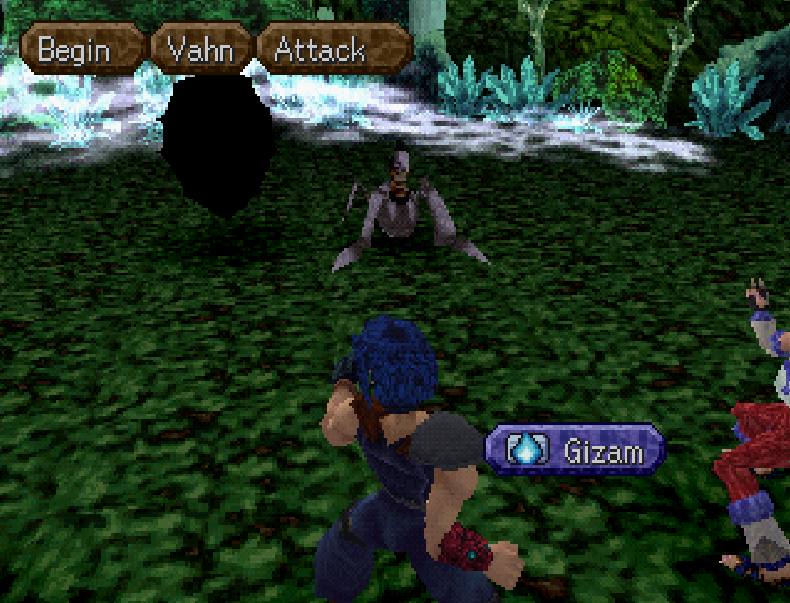
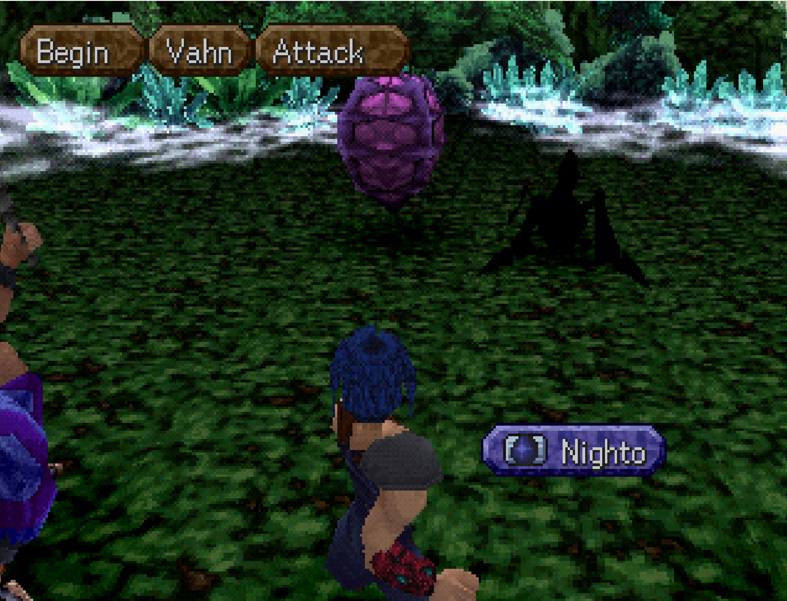
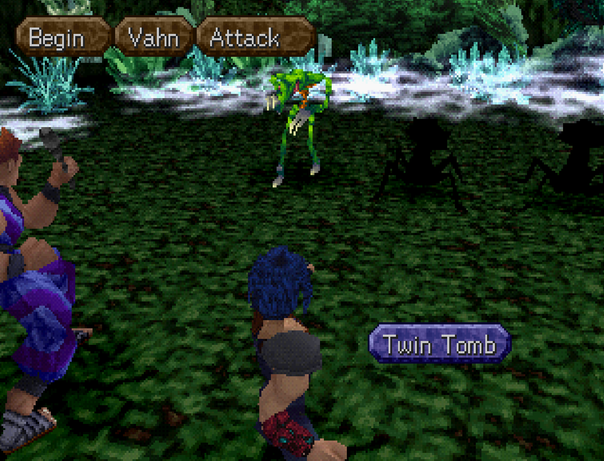
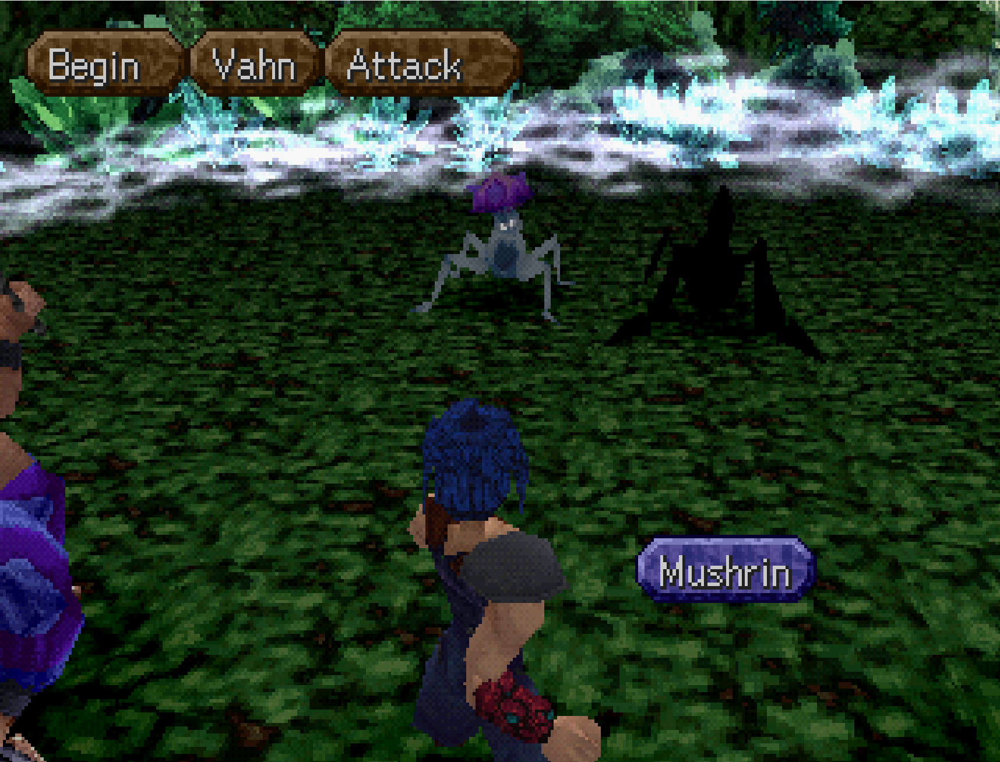
Avant le combat obligatoire contre 2 Viguro, sauvegarde et équipe l'Ivory Book à Vahn ou Noa. Il faut absorber un Viguro pendant ce combat précis. Gala ne peut pas le faire avant d'avoir Ozma. Si les deux Viguro meurent sans absorption, recharge.
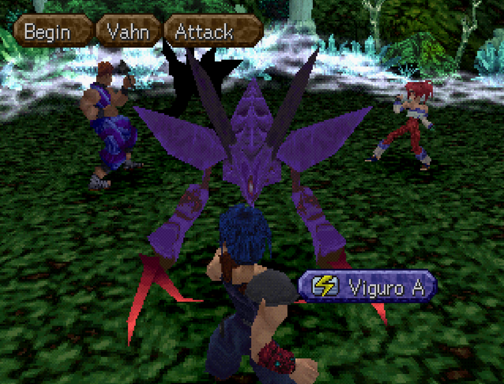
Genesis Tree et Ozma
Après les Viguro, réveille le Genesis Tree. Le Ra-Seru Egg éclot et Ozma rejoint Gala, qui peut désormais absorber les Seru.
I Choose You! — absorber Viguro pendant le combat obligatoire.
For the Monastery — réveiller le Genesis Tree d'East Voz Forest.
🎁 Cheminement précis des objets
Coche chaque objet au moment où tu le récupères. Le bouton photo ouvre directement la capture quand elle est disponible.
💧 Guardian Water
Lors du retour à Biron Monastery envahi par la Mist, va dans la chambre des femmes/Maya et examine le vase situé à droite/à l’est.
🌸 Healing Flower
Dans East Voz Forest, passe le premier Crystal Grass inaccessible par le tunnel de droite. Monte, dépasse le premier embranchement et prends la deuxième branche à gauche.
✨ Magic Leaf
Continue vers le nord et prends le premier chemin à droite pour récupérer le Weed Hammer. Utilise-le immédiatement sur le Crystal Grass juste au sud du coffre du marteau.
💧 Guardian Water
Avec le Weed Hammer, reviens complètement au début de la forêt et détruis le Crystal Grass qui bloquait le premier coffre visible.
🌸 Healing Bloom
Repars vers le nord. Dès ton arrivée sur le deuxième écran, longe immédiatement le bord droit/est pour trouver un chemin caché menant au coffre.
🧿 Cure Amulet
Continue sur la route principale jusqu’au Crystal Grass obligatoire. Détruis-le, puis prends immédiatement le tunnel végétal à gauche.
🧪 Antidote
Dans la zone suivante, prends le premier tunnel à gauche/ouest. Suis le passage jusqu’à la petite zone contenant deux coffres : l’Antidote est dans le premier.
🪵 Survival Club
Dans la même petite zone que l’Antidote, ouvre le second coffre.
💙 Azure Jewel
Reviens sur la route principale et continue vers le nord en suivant le chemin ; le coffre se trouve plus loin sur la progression obligatoire.
💊 Medicine
Depuis l’Azure Jewel, poursuis par les tunnels et casse le Crystal Grass. Le coffre se trouve sur le chemin juste avant le tunnel menant à la zone des Viguro.
🌍 Earth Jewel
Après avoir vaincu les deux Viguro et réveillé le Genesis Tree, passe derrière l’arbre vers le nord et appuie plusieurs fois sur X dans les buissons : l’objet est caché.
✅ Total attendu à la fin du chapitre : 58 / 260
Ce chapitre a été testé en jeu de bout en bout. Tous les trésors 59 à 73 et les trois succès du donjon ont été validés.
10 Healing Leaves de Maya
Au monastère, parle à Maya pour recevoir 10× Healing Leaves. Cette récompense correspond au trésor n°59.
Ne fais pas ce boss optionnel maintenant si tu es autour du niveau 12 : le combat commence par une embuscade et la magie y est bloquée. Il sera replacé plus tard dans la soluce avec un niveau et un équipement plus adaptés.
Explorer Zeto’s Dungeon
Le donjon mène progressivement jusqu'à 73 / 260. Thunder Book I est le premier coffre important ; utilise-le sur Gala. Fouille chaque salle latérale avant de poursuivre.
Les captures en jeu confirment Gimard Lv2, Theeder Lv2, Vera Lv2 et Zenoir. Gala possède maintenant Ozma : profite du donjon pour commencer à compléter ses Seru.
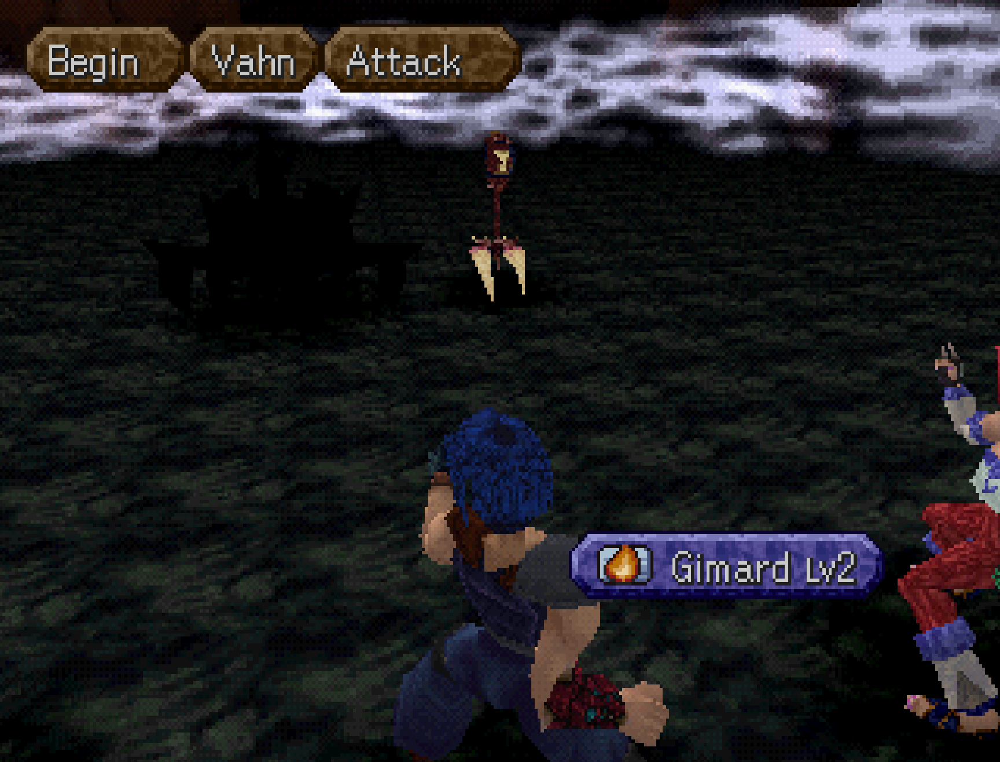
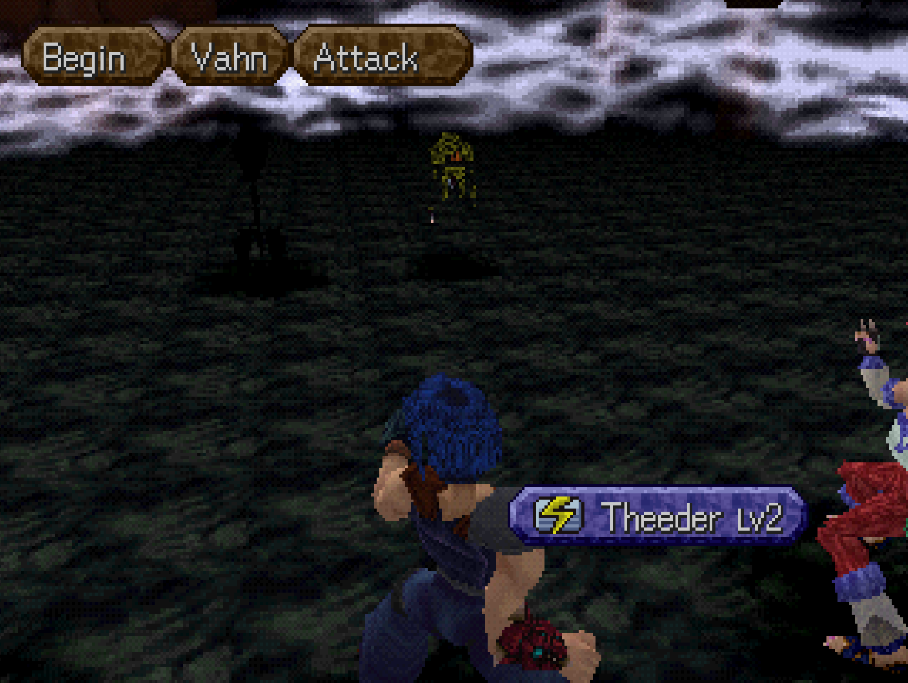
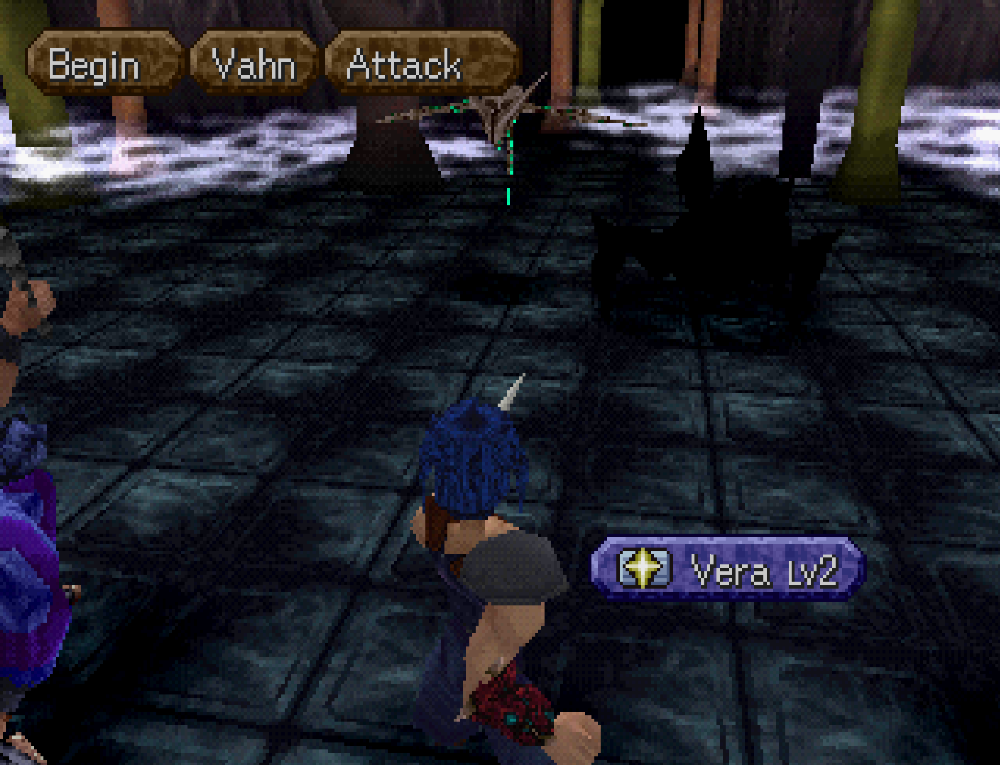
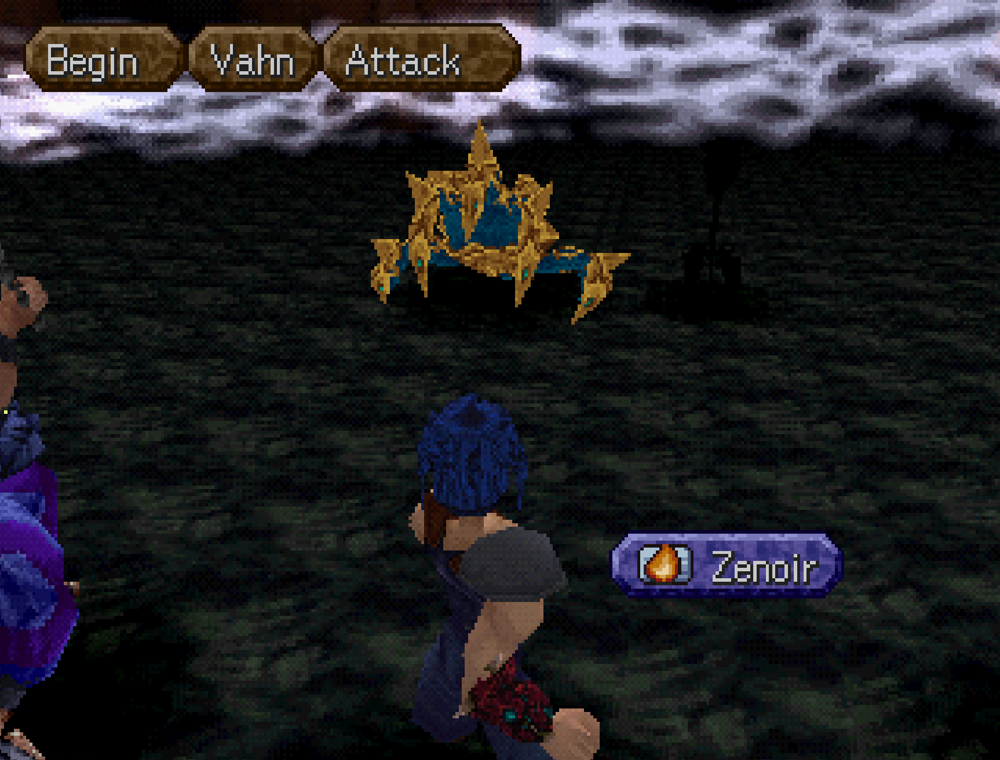
Gala affronte Songi seul. Pour le succès, bats Songi sans utiliser aucun Art. Spirit, attaques normales et objets restent disponibles. Condition testée et validée en jeu.
🔥 Songi
Récompenses confirmées : 1500 EXP • 750 G • Mettle Ring
Son attaque Hyper Wave est illustrée ci-contre.
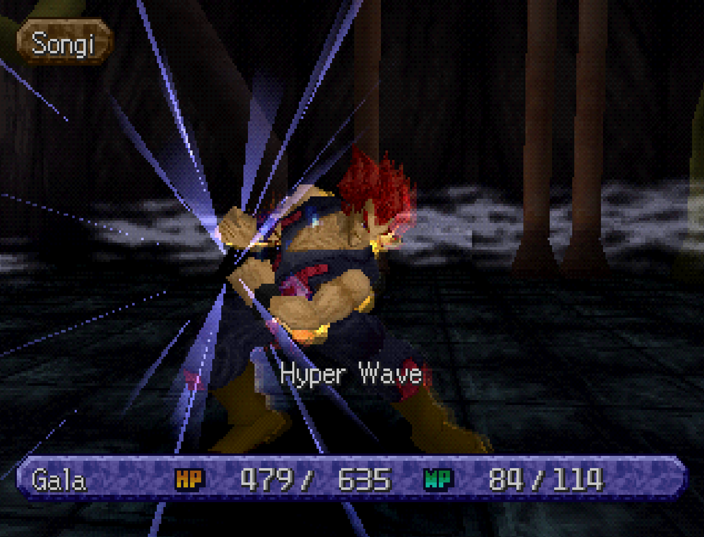
Après Songi, poursuis jusqu'au Mist Generator. Lorsque Zeto utilise Call Wave, prépare-toi à encaisser Big Wave au tour suivant : Spirit avec l'équipe est la solution prudente.
🌫️ Zeto
Premier Mist Generator. Surveille Call Wave : l’attaque Big Wave arrive ensuite.
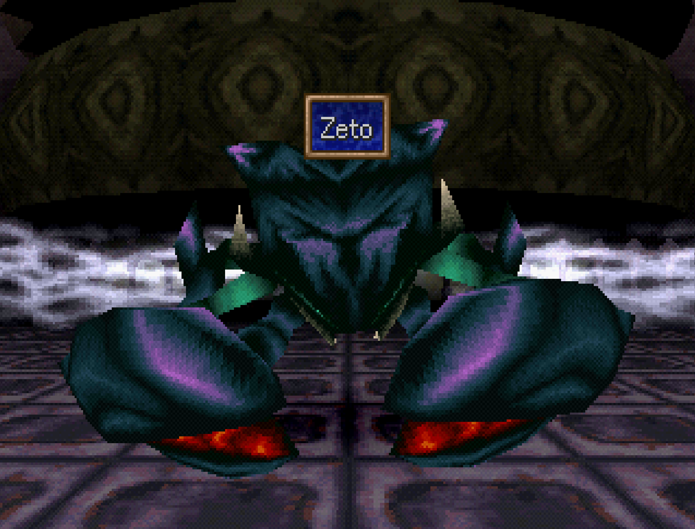
Vaincs Zeto sans utiliser de Hyper Arts. Les Arts normaux, Spirit, objets et magie restent autorisés. Cette condition a été testée et validée en jeu.
Red Vs. Blue ✅ • Salvation ✅ • Perfect Harmony ✅
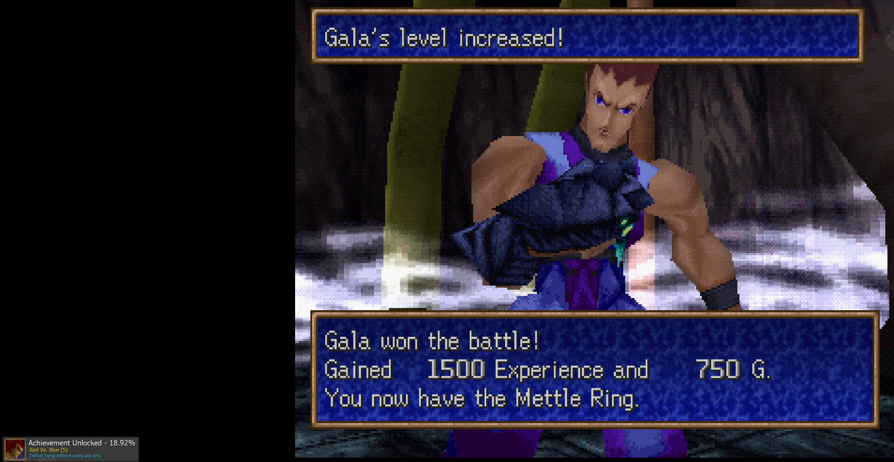
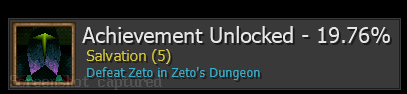
🎁 Cheminement précis des objets
Coche chaque objet au moment où tu le récupères. Le bouton photo ouvre directement la capture quand elle est disponible.
🍃 10× Healing Leaves
Après le réveil du Genesis Tree d’East Voz Forest et le retour à Biron, va dans la cuisine et parle à Maya pour recevoir les dix Healing Leaves.
⚡ Thunder Book I
À l’entrée de Zeto’s Dungeon, suis le premier couloir : ce coffre est quasiment directement sur ton passage.
🍃 Healing Leaf
Depuis le coffre du Thunder Book I, prends le chemin à l’est/droite ; le coffre se trouve immédiatement au nord.
🌸 Healing Flower
Depuis le Healing Leaf, pars directement vers le sud pour atteindre le coffre suivant.
💥 Fury Boost
Reviens au premier coffre, pars vers l’ouest/gauche et, juste avant de monter les escaliers, contourne-les par le sud.
🌸 Healing Bloom
Monte les escaliers et continue. À la prochaine séparation est/ouest, prends la branche ouest/gauche jusqu’au coffre.
⚔️ Short Sword
Prends ensuite l’ascenseur. Dès que tu arrives en bas, passe derrière l’ascenseur avant de quitter la salle.
🛡️ Shield Elixir
Dans le couloir après l’ascenseur, à la première bifurcation, tourne à droite et entre dans la pièce.
🔥 Phoenix
Reviens au couloir principal. À la deuxième bifurcation, pars au nord et suis le passage jusqu’à la pièce.
💊 Medicine
À la troisième bifurcation, prends encore le passage nord et suis-le jusqu’à la porte.
✨ Magic Leaf
À la quatrième bifurcation, prends cette fois le passage sud et suis-le jusqu’à la pièce.
🌸 Healing Bloom
Plus loin, tu arrives à deux portes opposées : entre d’abord par la porte nord.
🔥 Burning Jewel
Dans cette même paire de portes, entre ensuite par la porte sud.
🌪️ Tempest Jewel
À la paire de portes opposées suivante, commence par la porte nord.
🚪 Door of Light
Toujours sur cette deuxième paire de portes, ouvre ensuite la porte sud et prends le dernier coffre du donjon.
✅ Total attendu à la fin du chapitre : 73 / 260
Après la destruction du Mist Generator de Zeto, retourne à Biron puis dirige-toi vers l’Ancient Wind Cave. Ce chapitre est surtout consacré à l’exploration : aucun combat aléatoire dans la grotte, mais plusieurs objets cachés dans des tonneaux.
Rejoindre l’Old Wizard
À la première bifurcation, prends la branche de gauche. Entre dans la pièce de l’Old Wizard, puis visite aussi l’arrière-salle avec les lits avant d’actionner le levier.
Ne te contente pas des coffres visibles : Silver Compass et Wisdom Water se récupèrent en examinant le décor.
Ouvrir les grandes portes
Actionne le levier de l’arrière-salle. Reviens ensuite au chemin principal et passe les portes de pierre maintenant ouvertes. À la première bifurcation après les portes, prends d’abord la branche est pour le Door of Light.
Explorer avant l’Old Water Witch
À la bifurcation suivante, prends d’abord la route nord-ouest pour le Healing Bloom. Reviens ensuite sur tes pas et rejoins la vieille femme.
Dormir chez l’Old Water Witch
Accepte de passer la nuit pour voir la scène de rêve. Avant de repartir, examine les tonneaux de sa salle pour récupérer le Magic Water.
En essayant de quitter la grotte, la vieille femme te remet deux Doors of Wind. Elles sont très utiles pour les voyages rapides mais ne comptent pas dans les 260 trésors.
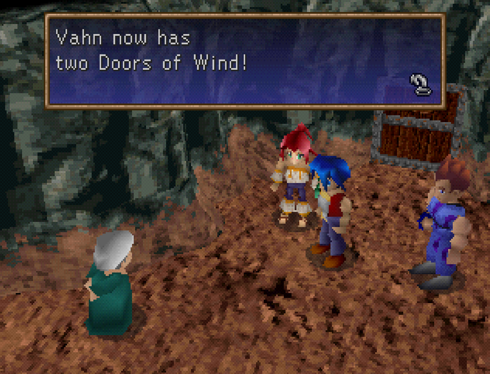
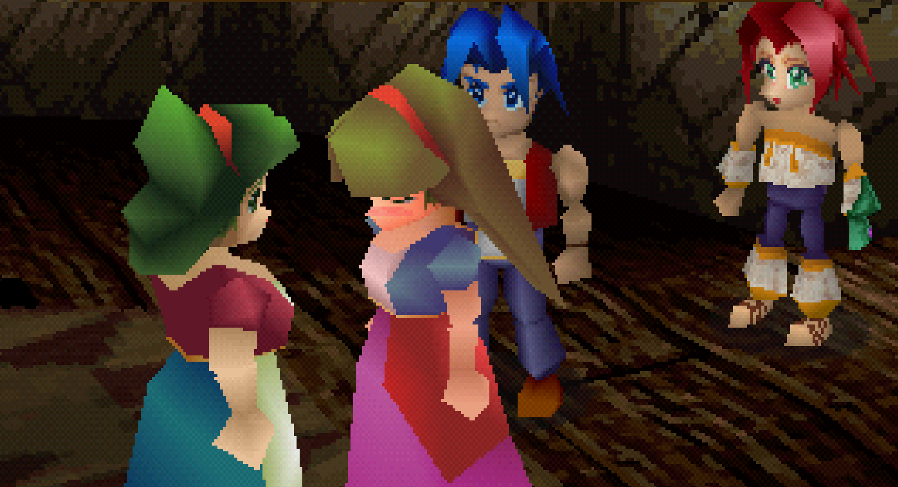
🎁 Cheminement précis des objets
Coche l’objet dès que tu le récupères. Le bouton photo reste dans la fiche et ouvre la capture correspondante.
🧭 Silver Compass
Dans l’arrière-salle de l’Old Wizard, près des lits, examine le tonneau placé contre le mur à droite/est.
💧 Wisdom Water
Reviens dans la pièce de l’Old Wizard et examine le tonneau situé derrière lui, près du comptoir.
🚪 Door of Light
Après avoir actionné le levier et franchi les grandes portes, prends la première branche vers l’est/droite et suis-la jusqu’au coffre.
🌸 Healing Bloom
À la bifurcation suivante, prends d’abord la branche nord-ouest/gauche et suis le passage jusqu’au coffre avant de revenir vers l’Old Water Witch.
✨ Magic Water
Dans la salle de l’Old Water Witch, examine le groupe de tonneaux près de l’Inn avant de quitter la zone.
✅ Total attendu à la fin du chapitre : 78 / 260
Jeremi est encore sous la Mist. Commence par fouiller les bâtiments de la ville avant d’entrer dans la grande tour : plusieurs objets sont cachés dans des étagères et comptent pour le 260/260.
Fouiller la ville avant la tour
À la première intersection, visite d’abord le bâtiment de droite : récupère le Phoenix, puis descends au sous-sol et examine les étagères à l’extrême droite pour la Target Chain. Reviens ensuite vers l’Inn pour le Power Water, puis fouille le bar : le Guardian Ring est caché dans une étagère.
La Target Chain, le Guardian Ring et plus tard le Healing Fruit sont faciles à manquer. Les captures ci-dessous sont là pour confirmer l’endroit exact.
Entrer dans la Sky Garden Tower
L’ascenseur central ne fonctionne pas au départ. Utilise les ascenseurs latéraux et explore chaque étage : Healing Leaf, Speed Ring et Healing Bloom se trouvent sur des détours avant l’interrupteur.
Surveille notamment Swordie. Les captures en jeu documentent aussi Hell’s Trigger, Kabuki Rat et Ogre.
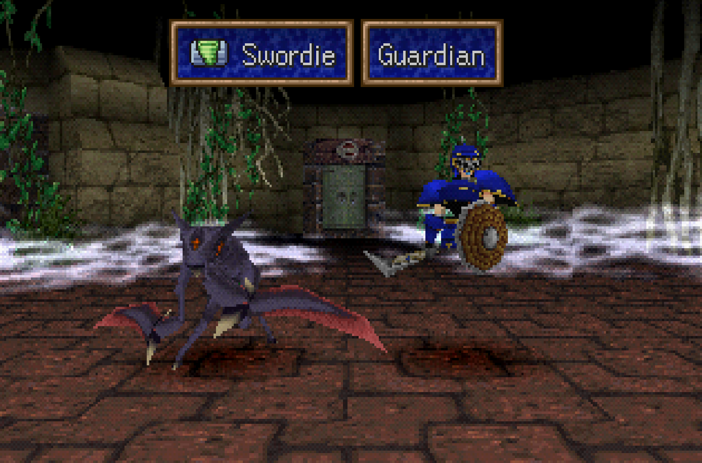
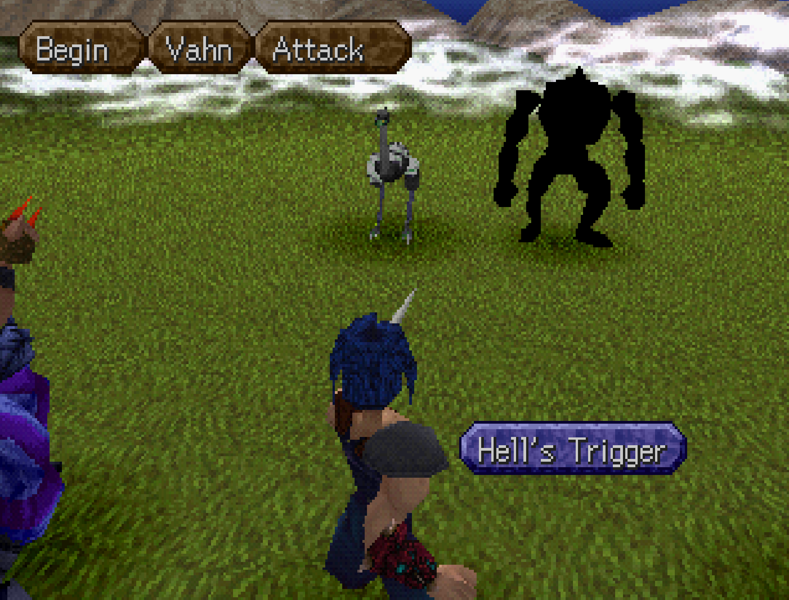
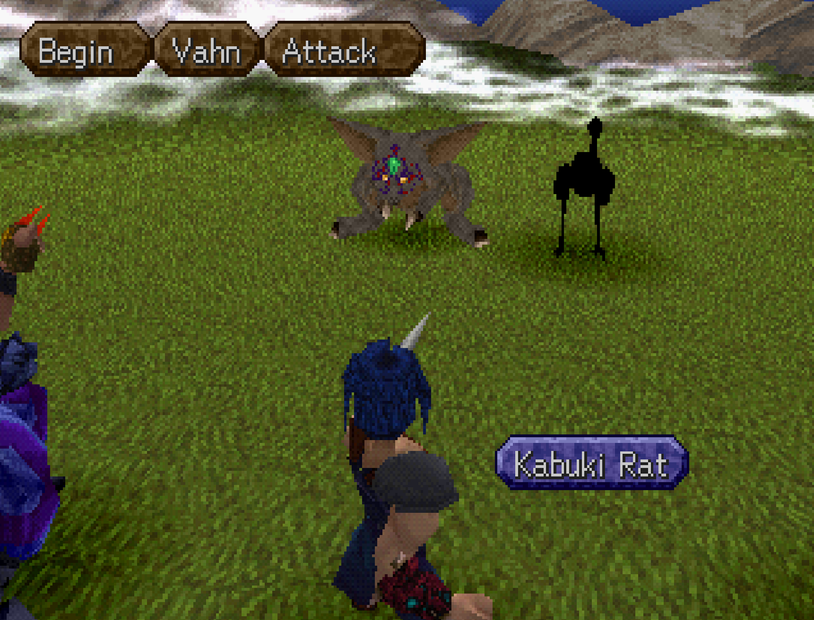
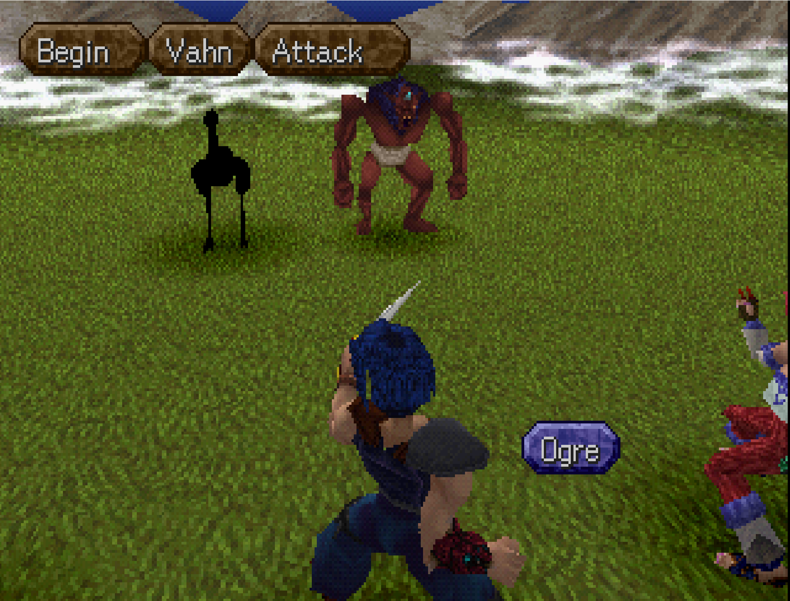
Activer l’ascenseur central
Au quatrième étage, utilise le chemin nord-ouest pour atteindre le mécanisme. Active-le avant de poursuivre : il simplifie tous les déplacements dans la tour.
Sky Garden — tout prendre avant Berserker
Depuis le point de sauvegarde, explore le jardin. Le Healing Fruit est caché dans le décor : va au cul-de-sac et examine les buissons. Récupère ensuite le Speed Elixir puis contourne la zone du Genesis Tree pour prendre le Forest Amulet avant de toucher Berserker.
Pour cette tentative, n’utilise pas Nighto contre Berserker. Sauvegarde avant le combat. Le Forest Amulet est particulièrement utile contre ses altérations.
🔥 Berserker
Boss du Sky Garden. Prépare tes soins et une bonne défense contre ses attaques de zone. À la victoire, tu reçois 2500 EXP, 1667 G et le Fire Book II.
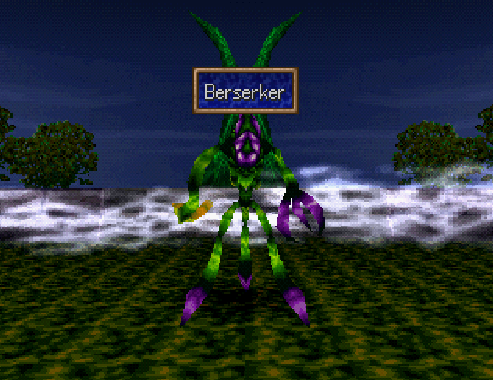
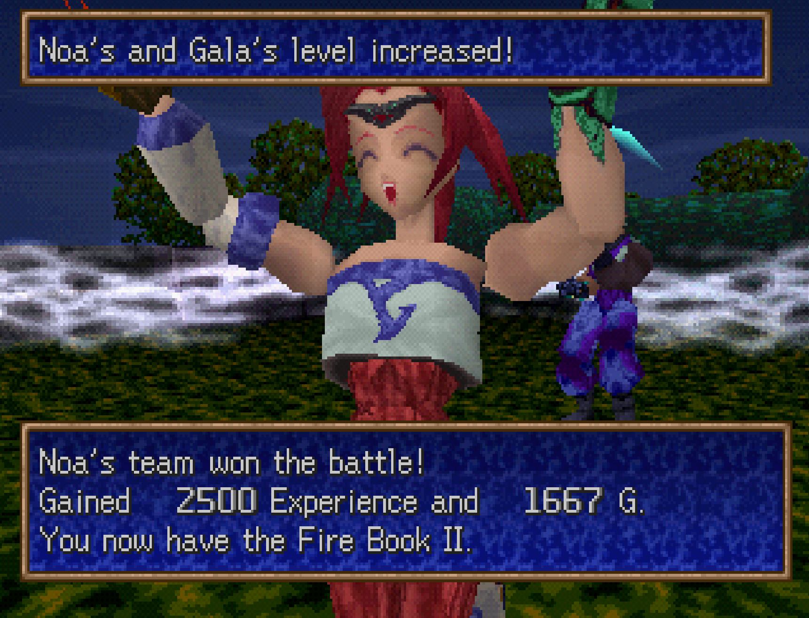
Réveiller le Genesis Tree
Après Berserker, réveille l’arbre pour libérer Jeremi de la Mist. Redescends ensuite en ville, visite les habitants et parle à Zalan pour obtenir sa lettre destinée à Pepe.
🎁 Cheminement précis des objets
Les onze objets 79–89 ont maintenant une capture. Coche-les directement ici sans liste en doublon.
🔥 Phoenix
À la première intersection de Jeremi, pars à droite et entre dans le bâtiment. Le coffre est visible au nord de la pièce.
⛓️ Target Chain
Dans le même bâtiment, descends au sous-sol et va complètement à droite. Examine les étagères : l’objet est caché dans le meuble.
💪 Power Water
Retourne à l’Inn de Jeremi, descends au sous-sol et ouvre le coffre situé sur le côté droit de la pièce.
🛡️ Guardian Ring
Entre dans le bar au nord de l’Inn. Va au coin nord-est et examine l’étagère : le Guardian Ring est caché dans le décor.
🌸 Healing Flower
Retourne devant la grande tour et visite le bâtiment situé à sa droite/est. Ouvre le coffre à l’intérieur.
🍃 Healing Leaf
Dans la Sky Garden Tower, passe la première porte au nord puis fouille le coin nord-est de la grande salle.
⚡ Speed Ring
Au troisième étage, utilise l’ascenseur nord-est et suis la petite zone annexe jusqu’au coffre.
🌸 Healing Bloom
Au quatrième étage, prends de nouveau l’ascenseur nord-est pour atteindre le coffre sur le détour.
🍎 Healing Fruit
Dans le Sky Garden, depuis la sauvegarde, prends le chemin de droite jusqu’au cul-de-sac. Il n’y a pas de coffre : examine les buissons/le décor avec X.
⚡ Speed Elixir
Reviens vers le chemin du Genesis Tree. Ouvre le coffre situé sur la route avant d’engager Berserker.
🌲 Forest Amulet
Ne déclenche pas encore Berserker. Contourne la zone du Genesis Tree par la droite/est et ouvre le dernier coffre du chapitre.
✅ Total attendu à la fin du chapitre : 89 / 260
Après Jeremi, pars vers Vidna. Cette étape sert à préparer la suite de l’aventure, à récupérer six nouveaux objets comptabilisés, à lancer la quête de Zalan et à débloquer définitivement le mini-jeu de pêche.
Nettoyer Vidna avant de repartir
Commence par l’auberge : monte à l’étage et fouille les placards pour récupérer Door of Wind puis Healing Flower. Passe ensuite à l’Item Shop et examine le placard du fond pour obtenir 10× Healing Leaves.
Phoenix et Magic Leaf
Entre dans la grande maison centrale / maison des sources chaudes. Près de l’homme endormi, examine le meuble pour récupérer un Phoenix. Dans l’armurerie, fouille le placard du fond pour prendre la Magic Leaf.
Récupérer le Fishing Tackle Set
Descends sur la plage au sud de Vidna. Examine d’abord le matériel de pêche posé près de l’homme, puis parle-lui : il te donne le Fishing Tackle Set. Cet objet compte dans le total des 260.
Quitte Vidna et prends le chemin vers la petite île située entre Jeremi et Vidna, en suivant la branche qui ne mène directement à aucune des deux villes. C’est le premier Fishing Spot du jeu. À Vidna, le Normal Tackle est un bon choix pour commencer.
Il n’existe pas de succès pour le premier poisson dans le set actuel. Deux objectifs importants sont à suivre : Débarrasser les lacs demande de pêcher 20 poissons au cours d’un seul voyage de pêche, et l’objectif du War God Icon de Vidna demande un gros cumul de points de pêche — le palier à viser est 50 000 points. Le farm complet peut être repoussé à plus tard.
Pepe et la quête de Zalan
Va dans la maison de Pepe, dans la partie nord-ouest de Vidna, et remets-lui la lettre de Zalan. Après la scène, tu reçois Yuma's Ring. Tu peux revenir à Jeremi pour la remettre à Zalan et obtenir Zalan's Crown. La Star Pearl, elle, sera obtenue après les révélations d’Octam.
Informations sur Octam
Profite de Vidna pour parler aux habitants. La maison à gauche et les personnages liés à Hari donnent les indices qui orientent vers Octam et ses prophéties. Une fois les six objets récupérés et le Fishing Tackle Set en poche, pars pour Octam.
🎁 Cheminement précis des objets
Récupère les six objets de Vidna avant de partir. Les captures permettent de confirmer immédiatement le bon meuble ou coffre.
🌪️ Door of Wind
Dans l’auberge de Vidna, monte au deuxième étage et examine les placards. Le premier objet à récupérer est une Door of Wind.
🌺 Healing Flower
Toujours à l’étage de l’auberge, fouille le second placard de la pièce pour récupérer la Healing Flower.
🍃 10× Healing Leaves
Dans l’Item Shop de Vidna, va jusqu’au placard du fond et examine-le pour recevoir les dix Healing Leaves.
🔥 Phoenix
Dans la grande maison centrale / maison des sources chaudes, examine le meuble près de l’homme endormi pour récupérer le Phoenix.
✨ Magic Leaf
Dans l’armurerie de Vidna, fouille le placard au fond du magasin.
🎣 Fishing Tackle Set
Sur la plage au sud de Vidna, examine le matériel de pêche près de l’homme allongé puis parle-lui. Il te remet le Fishing Tackle Set.
✅ Total attendu à la fin du chapitre : 95 / 260
Octam paraît abandonnée à ton arrivée. Avant de toucher au scénario, commence par récupérer les trois trésors immédiatement disponibles dans la ville. Tu dois être à 98 / 260 avant d’entrer dans le sanctuaire souterrain.
Speed Elixir — bâtiment à droite
Traverse Octam vers le bâtiment situé à droite de la ville. À l’intérieur, examine le meuble / placard pour récupérer le Speed Elixir.
Swift Water — maison tout à gauche
Va ensuite dans la maison située tout à gauche d’Octam. Le Swift Water se trouve bien dans un coffre à l’intérieur.
Healing Bloom invisible
Sors de cette maison et place-toi à droite du bâtiment tout à gauche. Examine le décor / les hautes herbes : le Healing Bloom est invisible, il n’y a aucun coffre à l’écran.
Orb apparaît à Octam et porte l’élément Light. Profite de la zone pour l’absorber ; utilise l’Ivory Book si nécessaire afin d’améliorer tes chances. La capture fournie permet d’identifier facilement le Seru.
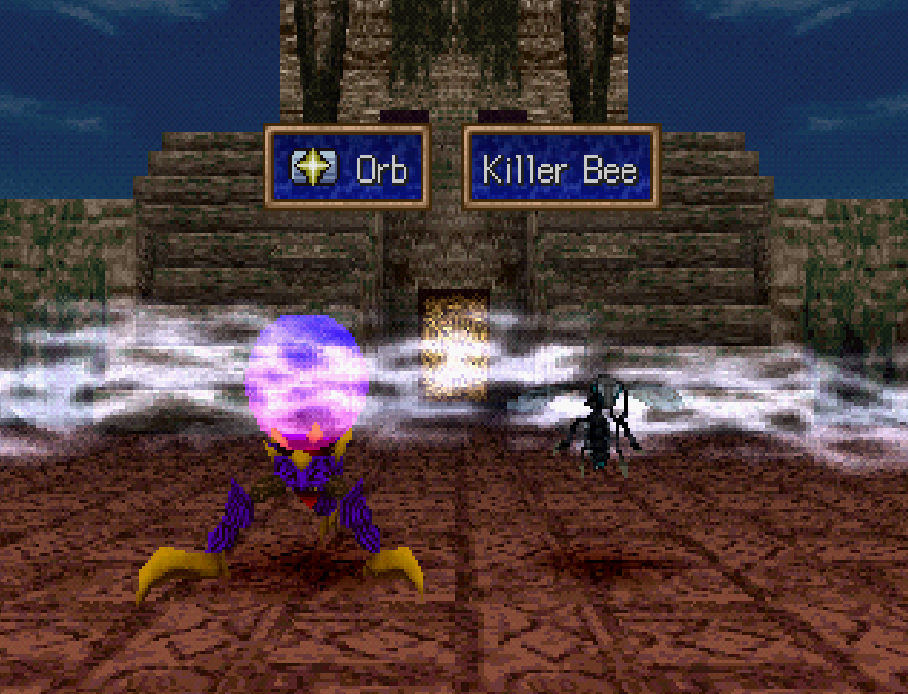
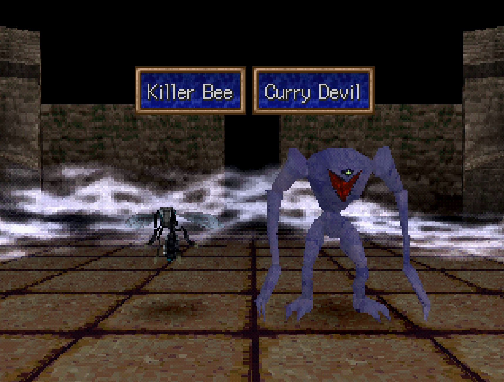
Entrer dans le sanctuaire de Rem
Une fois les trois trésors pris, descends par la porte centrale menant sous Octam. Dans la grande salle, examine les quatre faces / pierres élémentaires et garde leurs correspondances : Nord = Earth, Est = Wind, Sud = Water, Ouest = Fire. Elles serviront dès le chapitre suivant.
Lire les quatre Books of Prophecy
Lis les quatre livres de prophétie de la salle. Une fois les quatre volumes consultés, un passage secret s’ouvre sous l’un des socles. Les captures ci-dessous servent de repère pour les deux paires de livres.
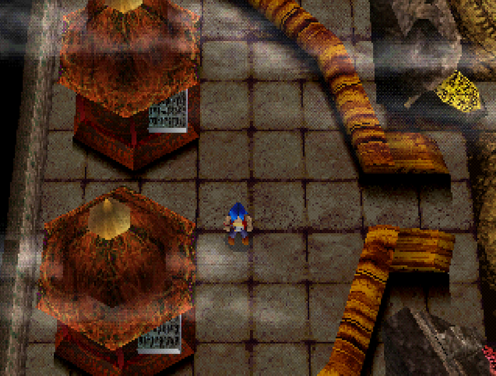
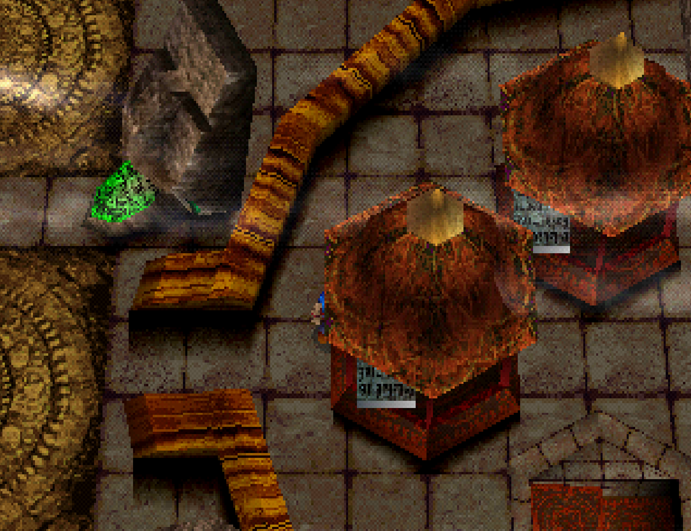
Passage secret et rencontre avec Cara
Descends le passage révélé et approche-toi de l’ascenseur. Cara apparaît et explique que les habitants d’Octam se trouvent sous terre. Elle révèle aussi que la Star Pearl qu’elle possédait a été mise en gage chez Zalan, à Jeremi.
Retour à Jeremi — récupérer la Star Pearl
Utilise une Door of Light puis une Door of Wind, ou retourne à pied jusqu’à Jeremi. Parle à Zalan. Si tu n’avais pas encore échangé Yuma’s Ring, fais-le maintenant pour obtenir Zalan’s Crown. Après les événements liés à Octam, Zalan remet également la Star Pearl au groupe.
🎁 Cheminement précis des objets
Ces trois trésors sont disponibles avant toute progression scénaristique dans Octam.
⚡ Speed Elixir
Dès ton arrivée, va dans le bâtiment à droite de la ville et examine le meuble / placard à l’intérieur.
💨 Swift Water
Entre dans la maison tout à gauche de la ville. Le Swift Water est dans un coffre à l’intérieur.
🌸 Healing Bloom
Objet invisible : sors de la maison tout à gauche, place-toi à droite du bâtiment et examine les hautes herbes / le décor avec X.
✅ Total attendu avant de quitter Octam : 98 / 260
Avec la Star Pearl, retourne au Gate of Shadows. Ce chapitre contient deux objets autour de la porte, sept trésors dans l’Ancient Path puis six objets à Underground Octam. En suivant l’ordre ci-dessous, tu termines la zone à 113 / 260.
Gate of Shadows — fouiller avant d’ouvrir la porte
Avant de résoudre le mécanisme, récupère les deux objets de la zone. Le Magic Leaf est dans un coffre dans la partie supérieure gauche. Le Miracle Water est un objet caché : va dans la partie supérieure droite, derrière le gros buisson, et examine le décor.
Utilise les indications vues sous Octam : Nord = Earth • Ouest = Fire • Est = Wind • Sud = Water. Une fois les quatre réponses entrées, utilise la Star Pearl dans le bassin central pour ouvrir l’accès à l’Ancient Path.
Ancient Path — premier embranchement
Descends jusqu’au premier embranchement. Prends d’abord le détour qui mène au coffre du Healing Flower #101, puis reviens et prends l’autre chemin. Le Healing Flower #102 se trouve directement sur cette route.
Life Ring puis Wonder Elixir
Au deuxième embranchement, prends le détour de droite pour récupérer le Life Ring #103, puis reviens sur le chemin principal. Au prochain embranchement, prends bien le chemin de droite pour aller chercher le Wonder Elixir #104.
La porte au nord et le Healing Flower
Reviens sur le chemin principal et continue jusqu’à apercevoir une porte au nord. Passe cette porte : le coffre contenant le Healing Flower #105 se trouve après la porte.
Plateformes mobiles — Fury Boost
Poursuis jusqu’à la salle aux plateformes / chemins mobiles. Avance de section en section : le coffre du Fury Boost #106 se trouve sur l’un des îlots rencontrés pendant la traversée.
Dernier embranchement — Shield Elixir
Après les plateformes, tu arrives au dernier embranchement important. Prends le chemin en haut à droite pour récupérer le Shield Elixir #107. Reviens ensuite et prends l’autre chemin pour atteindre Underground Octam.
Underground Octam — fouille avant le scénario
Dès ton arrivée, explore les bâtiments. Récupère le Healing Flower #108 dans le coffre du bâtiment au nord de l’Inn, puis fouille l’Inn pour trouver la Door of Wind #109 dans un meuble / placard.
Maison du maire — Medicine et Magic Water
Dans la grande maison centrale, monte jusqu’au dernier étage. Ouvre le coffre pour obtenir la Medicine #110, puis examine le meuble / récipient près du bureau pour récupérer le Magic Water #111.
Avant de faire avancer les événements avec Hari, entre dans sa maison et fouille le meuble / placard pour prendre le Life Water. La maison finit par disparaître avec la progression du scénario : récupère donc cet objet avant de poursuivre.
Dernier objet de la ville — Fury Boost
Dans la maison située à gauche de la grande maison centrale, examine le récipient / meuble près du lit pour récupérer le Fury Boost #113.
Hari et la prochaine destination
Une fois les six objets d’Underground Octam sécurisés, poursuis les événements avec le maire puis Hari. Après les révélations et la scène finale, la prochaine destination est le Fire Path.
🎁 Cheminement précis des objets
Coche chaque objet au moment où tu le récupères. Chaque bouton ouvre directement ta capture correspondante.
✨ Magic Leaf
Gate of Shadows : ouvre le coffre dans la partie supérieure gauche de la zone avant d’activer la porte.
💧 Miracle Water — objet caché
Gate of Shadows : va dans la partie supérieure droite, derrière le gros buisson, et examine le décor. Il n’y a pas de coffre visible.
🌸 Healing Flower
Ancient Path : au premier embranchement, prends le détour menant au cul-de-sac avec ce coffre, puis reviens à l’embranchement.
🌸 Healing Flower
Reviens au premier embranchement et prends l’autre route. Ce coffre se trouve directement sur le chemin.
💍 Life Ring
Au deuxième embranchement, prends le détour de droite et suis-le jusqu’au coffre, puis reviens.
🧪 Wonder Elixir
À l’embranchement suivant, prends bien le chemin de droite pour atteindre le coffre du Wonder Elixir.
🌸 Healing Flower
Continue le chemin jusqu’à voir une porte au nord. Passe la porte : le coffre du Healing Flower se trouve juste après.
💥 Fury Boost
Dans la grande salle aux plateformes mobiles, traverse les sections successives. Le coffre apparaît sur un îlot pendant la progression.
🛡️ Shield Elixir
Au dernier embranchement, prends celui en haut à droite. Le coffre est au bout de ce détour.
🌸 Healing Flower
Underground Octam : dans le bâtiment situé au nord de l’Inn, ouvre le coffre à l’intérieur.
💨 Door of Wind
Dans l’Inn d’Underground Octam, examine le meuble / placard indiqué sur la capture.
💊 Medicine
Dans la grande maison du maire, monte au dernier étage et ouvre le coffre.
💧 Magic Water
Toujours au dernier étage de la maison du maire, examine le récipient / meuble près du bureau.
❤️ Life Water — ⚠️ RATABLE
Dans la maison de Hari, examine le placard / meuble avant de poursuivre les événements. Prends-le impérativement avant la disparition de la maison.
💥 Fury Boost
Dans la maison située à gauche de la grande maison centrale, examine le récipient / meuble près du lit.
✅ Total attendu à la fin du chapitre : 113 / 260
Depuis Underground Octam, prends l’entrée du Fire Path au nord-ouest de la ville. Ce chapitre va de 113 / 260 à 126 / 260. La fin du donjon est importante : deux coffres doivent rester fermés jusqu’à la défaite de Xain afin d’obtenir leur meilleur contenu.
Du début du Fire Path jusqu’aux piliers
Suis le chemin déjà détaillé pour récupérer successivement #114 Wisdom Water, #115 Speed Elixir, #116 Healing Bloom, #117 Magic Leaf, #118 Healing Bloom, #119 Gala Mace et #120 Healing Flower.
Les rencontres observées dans cette partie sont Warman, Mush Mush, Gel Frog, Stone Lizard et Nova. Les groupes photographiés sont Warman + Mush Mush ×2, Gel Frog + Stone Lizard et Nova + Gel Frog.
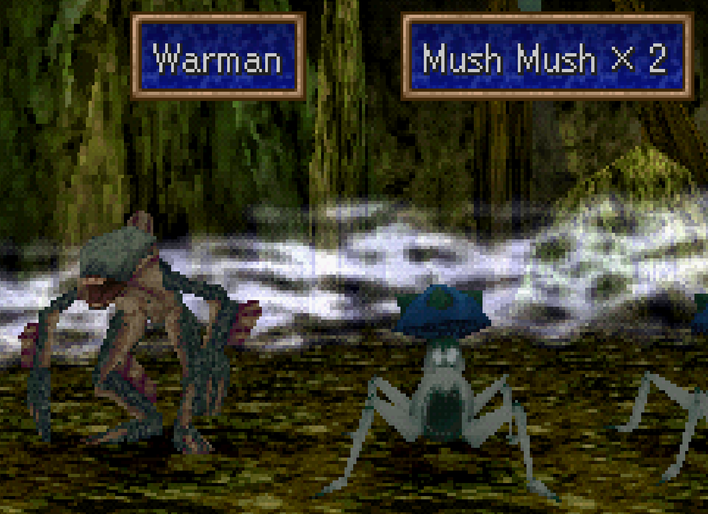
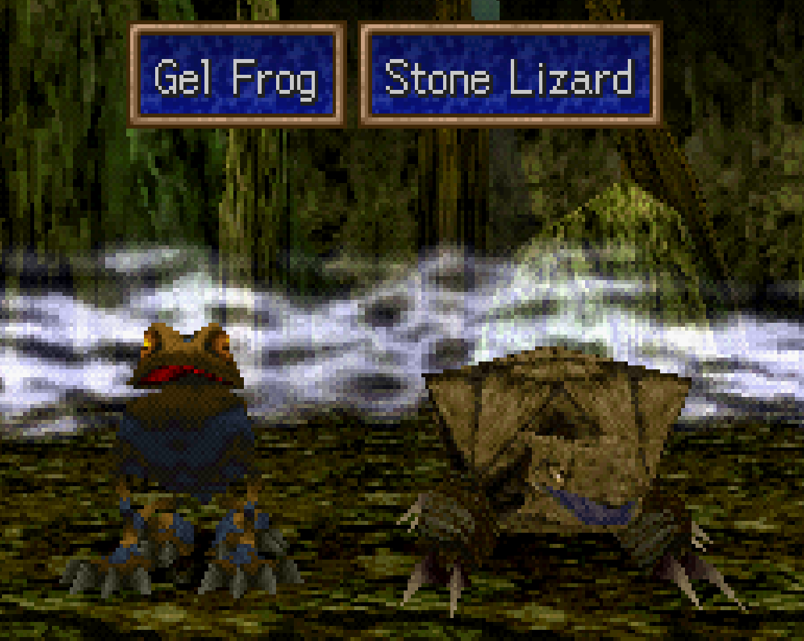
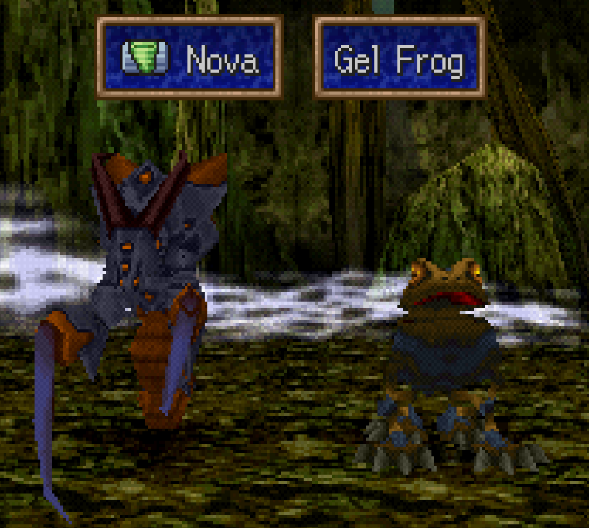
Zone de lave — repère les deux coffres, mais ne les ouvre pas
Dans la dernière partie avant Xain, tu rencontreras essentiellement Gola Gola ×2. En avançant sur les rochers au-dessus de la lave, tu vas voir deux coffres accessibles avant le boss.
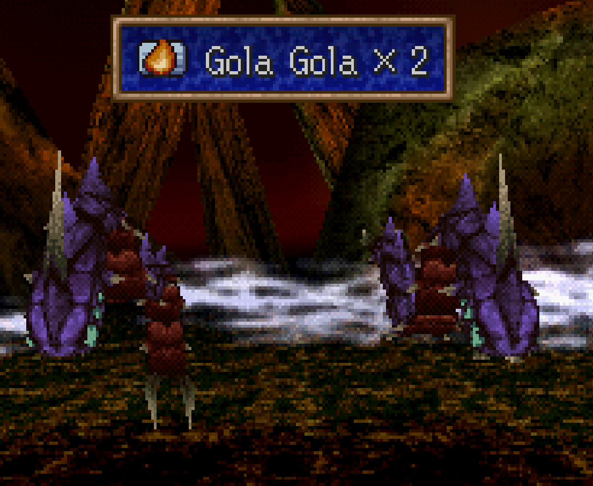
Le premier coffre donne un Phoenix si tu l’ouvres maintenant, mais il deviendra un Magic Water une fois la lave gelée. Le second donne un Door of Light avant le combat, mais deviendra un Life Water après le gel. Notre route 100 % recommande donc de les laisser fermés. Ils ne sont pas cochés dans le suivi tant que Xain n’est pas vaincu.
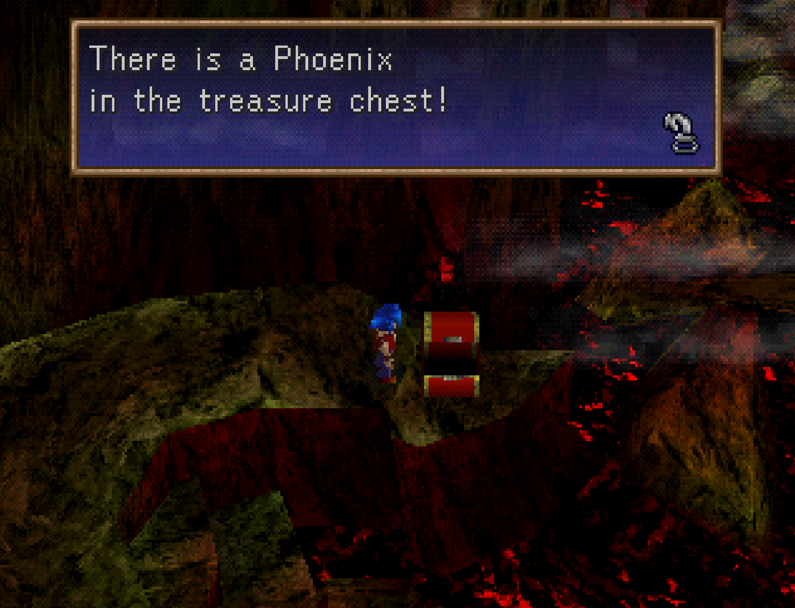
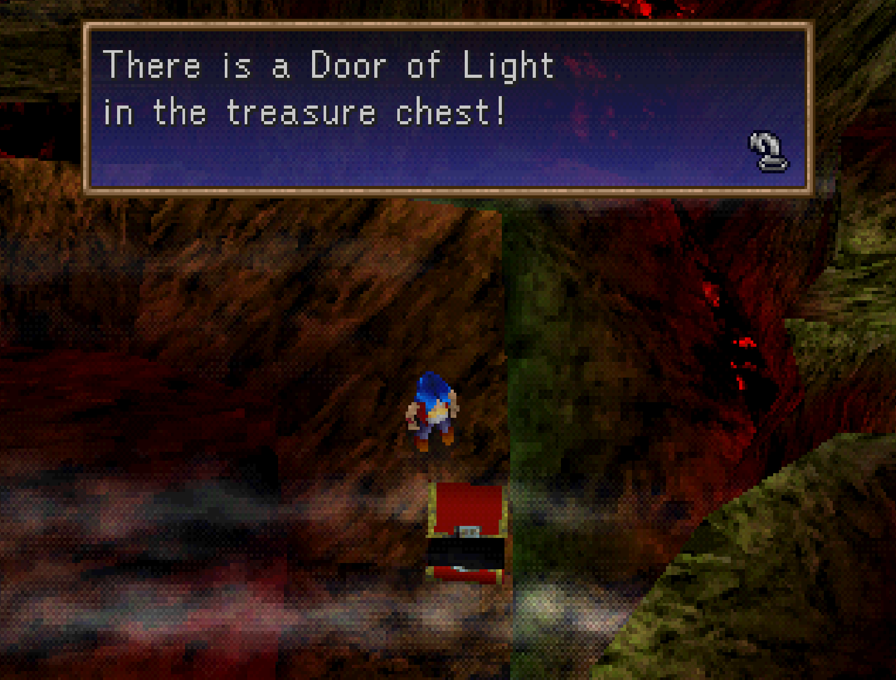
Boss — Xain
Continue jusqu’à Xain et provoque le combat. Sauvegarde et soigne l’équipe avant de lui parler.
🔥 Xain
Niveau conseillé : autour de 19. Xain frappe très fort, notamment avec Terio Punch. Garde les PV élevés et utilise Spirit lorsque tu dois encaisser ou reconstruire ta barre d’AP. Les Healing Blooms/Flowers sont utiles si plusieurs personnages chutent en même temps. Après la victoire, utilise le Wind Book II obtenu.
Après Xain — la lave est gelée
Ne quitte surtout pas la zone. La lave est maintenant devenue de la glace : c’est le moment de récupérer les deux coffres laissés volontairement fermés, puis les quatre trésors supplémentaires accessibles autour de l’arène.
🎁 Cheminement précis des objets
Les #114 à #120 restent inchangés. Les #121 et #122 ne doivent être cochés qu’après Xain, lorsque leur contenu a été amélioré.
🧠 Wisdom Water
Au premier embranchement du Fire Path, prends le coffre visible sur la droite puis reviens sur le chemin principal.
⚡ Speed Elixir
Au deuxième embranchement, prends le chemin vers le sud, traverse les blocs / plateformes puis pars vers la droite jusqu’au coffre.
🌸 Healing Bloom
Après la scène du pilier qui se déplace, continue vers la droite : le coffre est directement sur le chemin.
🍃 Magic Leaf
Continue sur le chemin principal jusqu’au grand pilier creux. L’ouverture est directement visible depuis le chemin : entre à l’intérieur et ouvre le coffre.
🌸 Healing Bloom
Poursuis jusqu’au pilier suivant et entre à l’intérieur par son ouverture pour atteindre le coffre.
🔨 Gala Mace
Depuis le secteur du coffre #118, pars vers le sud puis entre dans le pilier accessible pour récupérer la Gala Mace.
🌺 Healing Flower
Reviens vers la progression principale et poursuis vers la gauche. Entre dans le pilier suivant pour ouvrir ce coffre.
💧 Magic Water — après le gel
Retourne au coffre rencontré en suivant les rochers au-dessus de la lave. Tu l’as volontairement laissé fermé : après Xain, ouvre-le sur la glace pour obtenir Magic Water au lieu du Phoenix.
❤️ Life Water — après le gel
Retourne au coffre situé au nord de l’endroit où tu avais rencontré Xain, au bout du chemin. Ouvre-le seulement maintenant pour obtenir Life Water au lieu de Door of Light.
⛓️ Guardian Chain
Après Xain, pars immédiatement vers l’est sur le nouveau chemin de glace : le coffre est tout près de l’ancienne arène.
🌿 Incense
Depuis l’endroit où Xain a été vaincu, pars vers l’ouest. Descends la rampe puis prends le chemin vers le sud-est pour atteindre le coffre.
🌸 Healing Bloom
Après avoir descendu la rampe, explore cette fois complètement vers l’ouest en longeant bien le côté gauche : le passage menant au coffre est facile à manquer.
💪 Power Water
Lorsque tu trouves la sortie du Fire Path, ne la prends pas encore. Continue vers l’est jusqu’aux escaliers, monte et suis le chemin vers le nord. Au bloc de glace qui barre la route, appuie sur X pour le pousser et continue jusqu’au coffre final.
✅ Total attendu avant de quitter le Fire Path : 126 / 260
Remonte à Underground Octam. Parle au maire : il te demandera d’aller chercher des Spring Salts à Vidna. Utilise ensuite l’ascenseur, quitte Octam, reviens sur la carte du monde et dirige-toi vers Vidna.
Ce chapitre commence à 126 / 260. Avant de partir vers Ratayu, il faut faire un aller-retour obligatoire par Vidna puis revenir voir le maire d’Underground Octam. Le cheminement ci-dessous indique à chaque fois quand revenir sur la carte du monde.
Underground Octam — Miracle Water avant de partir
Après être remonté du Fire Path, va voir la statue de Future Hari et examine-la deux fois de suite. Tu récupères le Miracle Water #127. Ensuite, parle au maire : il te demande d’aller chercher des Spring Salts à Vidna.
Utilise l’ascenseur pour remonter, quitte Octam et reviens sur la carte du monde. Dirige-toi ensuite vers Vidna.
Vidna sous la Mist — va au refuge puis à la salle des machines
Vidna a changé depuis ta précédente visite. Les habitants se sont réfugiés chez Danpas, tout à gauche de la ville. Passe par le refuge pour suivre la situation, puis rends-toi dans la salle des machines afin de récupérer les Spring Salts et les objets comptabilisés.
Salle des machines — quatre objets
Descends les escaliers. Depuis le niveau inférieur : va vers le bas pour le Shield Elixir #128, complètement à gauche pour les Spring Salts #129, puis vers la droite et remonte pour le Healing Flower #130. Enfin, examine la grande machine de la partie supérieure gauche pour le Magic Ring #131.
Une fois les quatre objets de Vidna obtenus, quitte la ville, retourne sur la carte du monde, rejoins Octam et redescends à Underground Octam. Remets les Spring Salts au maire.
Récompense du maire et nouvelle destination
En donnant les Spring Salts au maire, tu reçois la Slowness Chain #132. Il t’oriente ensuite vers le prochain Genesis Tree, situé au Mt. Letona près de Ratayu.
Quitte Underground Octam, remonte à la surface puis reviens sur la carte du monde. Dirige-toi vers Ratayu. En arrivant, commence par fouiller toute la ville avant d’aller voir Saryu.
Ratayu — vider les bâtiments de la ville
Récupère d’abord #133 Magic Leaf dans le magasin d’armes. Depuis l’auberge, suis le chemin à droite jusqu’à la maison au nord pour #134 Ivory Book, puis visite la maison à l’ouest pour #135 Door of Wind. Termine par le magasin d’objets, au nord du magasin d’armes, pour #136 Healing Bloom.
Les rencontres observées sont Viguro Lv2, Skull Knight et Demon Fly.
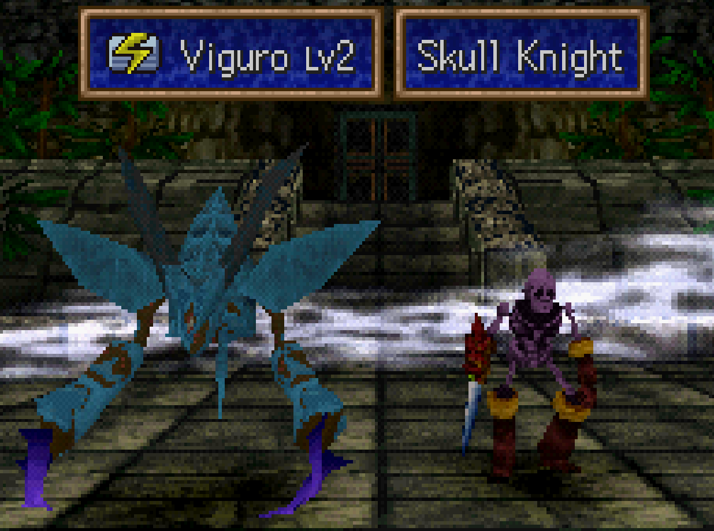
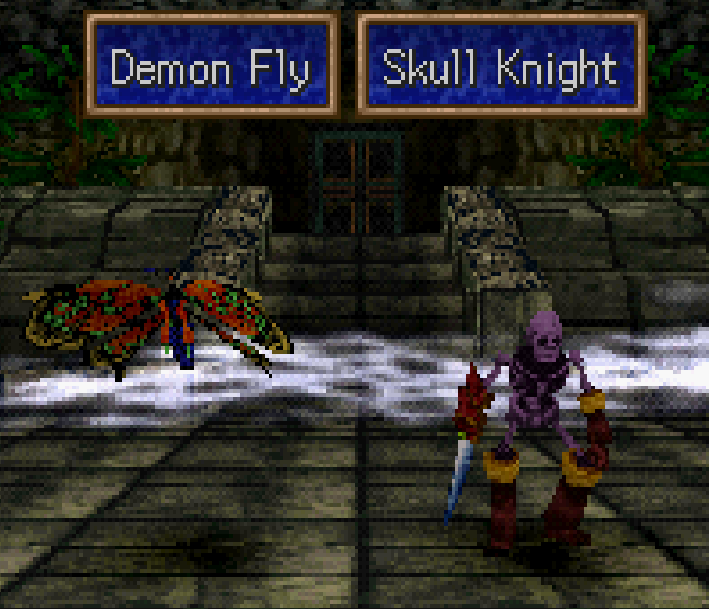
Château de Ratayu — tout prendre avant Saryu
Entre dans le château mais ne parle pas encore à Saryu. Récupère #137 Magic Leaf à droite du grand escalier. Dans la salle suivante, prends la porte la plus basse du côté est pour #138 Swift Water, puis la porte centrale du côté ouest pour #139 Healing Flower. Dans la salle du trône, ouvre enfin les trois coffres : #140 Fury Boost, #141 Speed Elixir et #142 Healing Berry.
Les rencontres observées dans le château sont Viguro Lv2, Skull Knight et Evil Shadow.
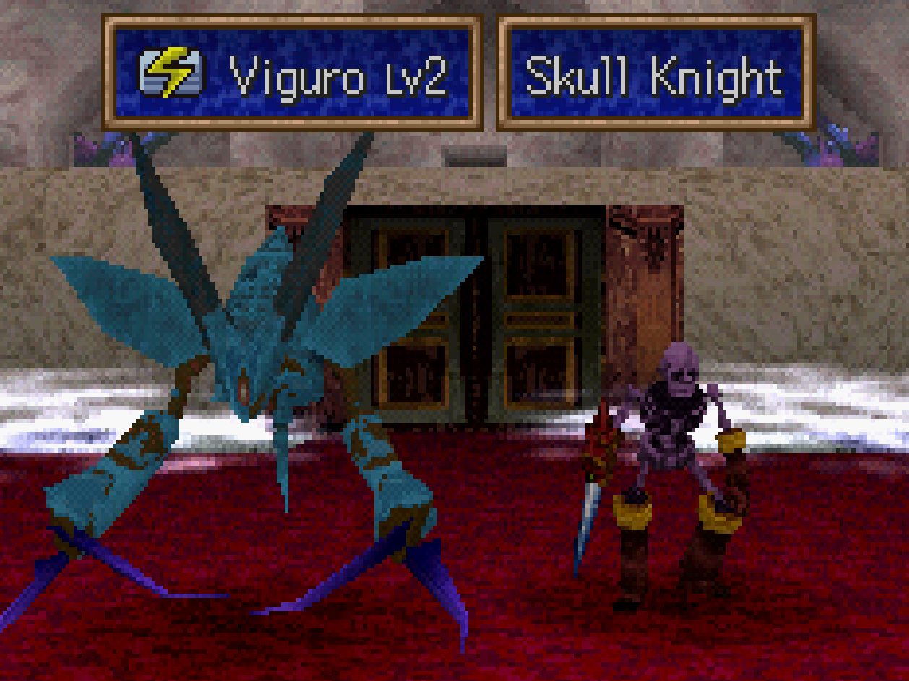
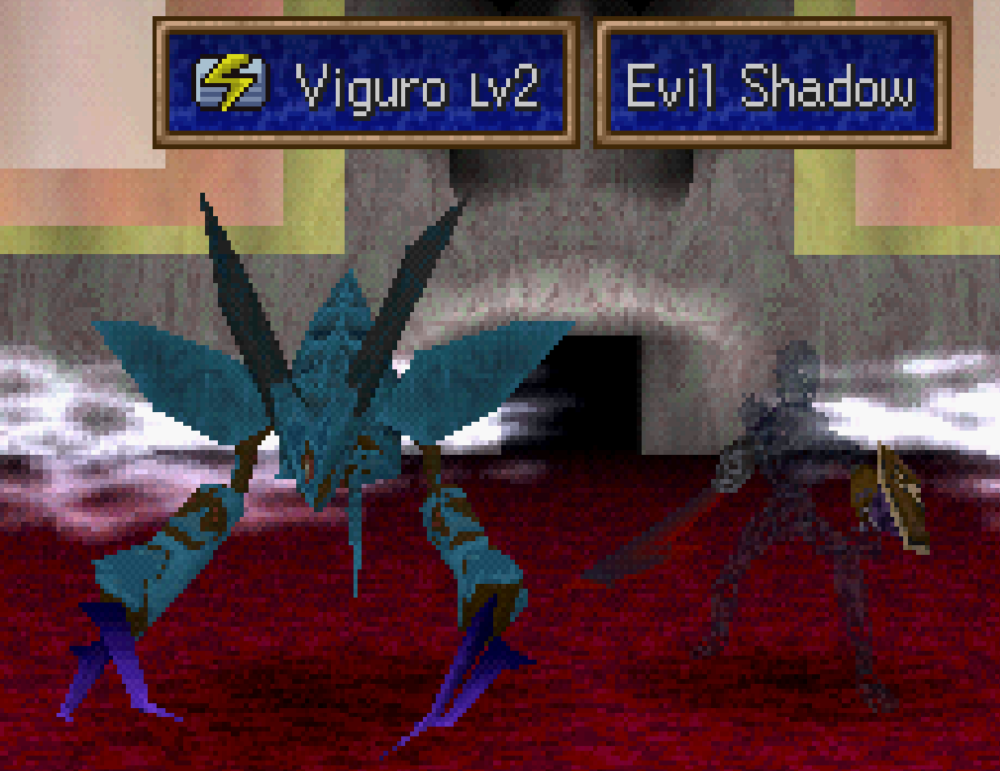
🎁 Cheminement précis des objets — #127 à #142
Cette séquence remet le compteur au propre. Si tu suis exactement cette route, tu dois arriver à 142 / 260 avant de parler à Saryu.
💧 Miracle Water
Underground Octam : examine deux fois de suite la statue de Future Hari avant de partir pour Vidna.
🛡️ Shield Elixir
Vidna, salle des machines : descends les escaliers et, depuis l’intersection du niveau inférieur, va vers le bas jusqu’au coffre.
🧂 Spring Salts
Dans le même niveau inférieur, pars complètement vers la gauche. Les Spring Salts sont nécessaires pour poursuivre l’histoire et comptent dans les 260 objets.
🌸 Healing Flower
Depuis les escaliers du niveau inférieur, pars vers la droite puis remonte jusqu’au coffre situé sur la passerelle.
💍 Magic Ring — objet caché
Dans la salle des machines, examine la grande machine située dans la partie supérieure gauche. Il n’y a pas de coffre.
⛓️ Slowness Chain
De retour à Underground Octam, remets les Spring Salts au maire. Il te donne la Slowness Chain en récompense.
🍃 Magic Leaf
Ratayu : dans le magasin d’armes, ouvre le coffre situé dans le coin nord-ouest.
📖 Ivory Book
Depuis l’auberge, prends le chemin qui passe à droite et entre dans la maison située plus au nord. Le coffre est à l’intérieur.
🌪️ Door of Wind
Entre dans la maison située à l’ouest de celle du #134 et ouvre le coffre.
🌸 Healing Bloom
Dans le magasin d’objets, au nord du magasin d’armes, ouvre le coffre placé dans le coin nord-est.
🍃 Magic Leaf
Dans le château, va au grand escalier et fouille le côté droit / nord-est avant de continuer plus loin.
💧 Swift Water
Dans la salle avec plusieurs portes, prends le groupe de portes à l’est et entre par la porte la plus basse.
🌸 Healing Flower
Reviens dans la même salle, passe du côté ouest et prends la porte centrale.
🔥 Fury Boost
Dans la salle du trône, ouvre le coffre de gauche parmi les deux coffres situés à l’ouest du trône.
⚡ Speed Elixir
Dans la salle du trône, ouvre le second coffre à l’ouest du trône, juste à côté du Fury Boost.
🍓 Healing Berry
Avant de parler à Saryu, récupère le coffre situé à l’est du trône.
✅ Point de contrôle avant Saryu : 142 / 260
Parler à Saryu
Une fois les dix objets de Ratayu récupérés, parle enfin à Saryu. Il te remet la Letona Key. Cette clé est un objet de scénario et ne s’ajoute pas au compteur des 260.
Quitte le château puis Ratayu, reviens sur la carte du monde et dirige-toi vers Mt. Letona. La prochaine partie commencera à 142 / 260. Premier objectif : récupérer les trésors de la montagne et surveiller le Seru Mushura.
Chapitre 14 — Mt. Letona, suite
La prochaine partie reprend à 142 / 260.